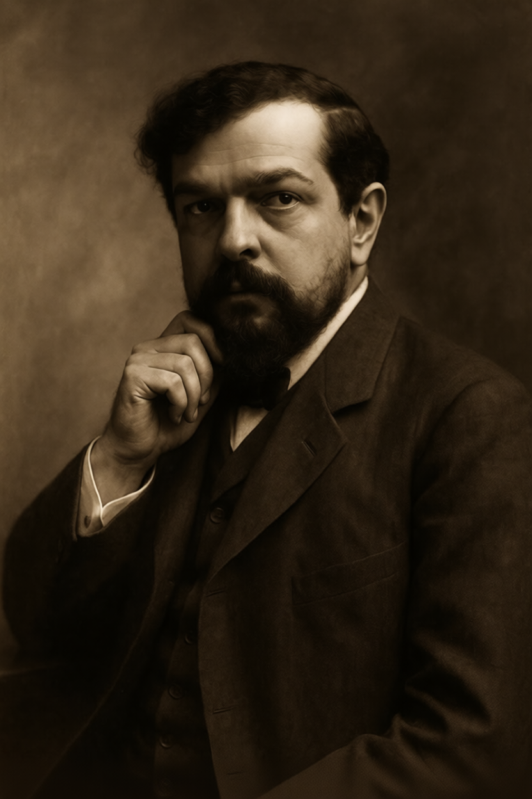
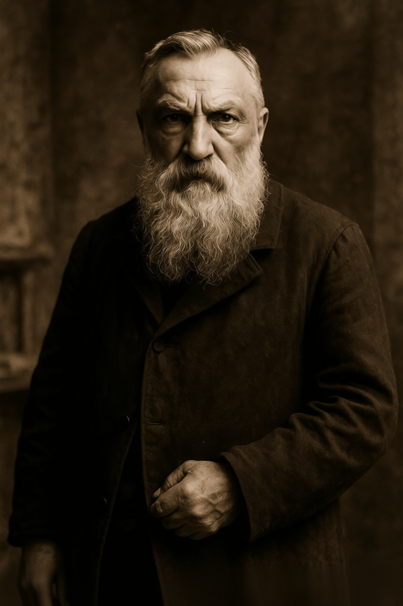
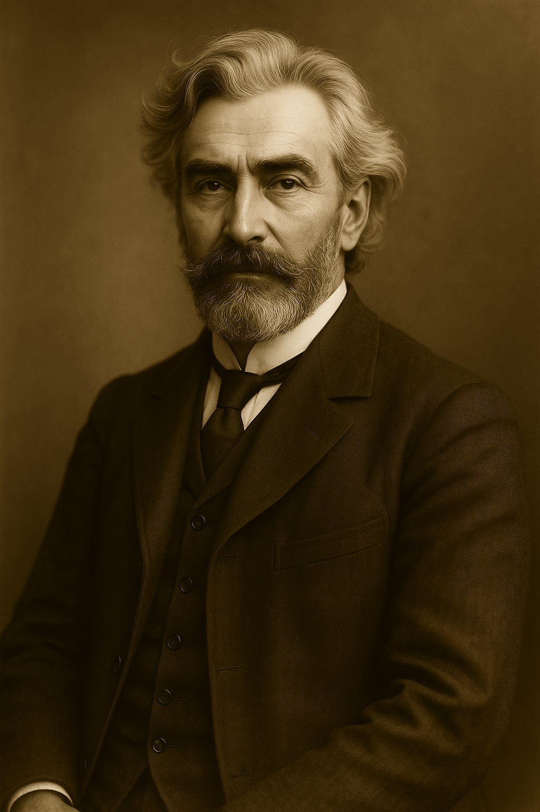

CLAIR OBSCUR
"Todo arte es el resultado de haber estado en peligro, de haber atravesado una experiencia hasta el final, donde nadie puede ir más allá"
— Rainer Maria Rilke
Introducción
"Es a través del arte, y solo a través del arte, que podemos realizar nuestra perfección."
— Oscar Wilde
El año es 1905 y París se alza como la capital indiscutible del mundo civilizado. Los bulevares resplandecen con luz eléctrica; los automóviles Panhard-Levassor compiten con los elegantes landós por las avenidas; la Torre Eiffel —ese prodigio que hace apenas dieciséis años escandalizó a los puristas— se ha convertido en el símbolo mismo de la modernidad. En los cafés se debate el futuro de la humanidad mientras el Metro transporta multitudes a través de túneles decorados con las sinuosas formas del Art Nouveau de Hector Guimard.
Pero esta es solo la superficie. Bajo el barniz de progreso y racionalidad, París es una ciudad de intriga y poder oculto. Aquí el arte no es simplemente expresión del alma humana o adorno burgués, sino una fuerza primordial que altera la realidad, manipula las emociones y da vida a lo inanimado. Quienes dominan este poder —los Maestros del Arte— son los verdaderos gobernantes de Francia.
Caminar por el Louvre significa exponerse a pinturas que pueden cambiar tu forma de pensar, sentir y recordar. Asistir a un concierto en la Ópera Garnier es someterse a un ritual de manipulación emocional donde el compositor lleva a la audiencia del éxtasis a la desesperación. Las estatuas de las Tullerías no son meros monumentos: algunas son gólems durmientes que aguardan la orden de despertar. Los edificios de los Maestros Arquitectos contienen habitaciones imposibles, puertas que conducen a ninguna parte y espacios que desafían las leyes de la geometría.
En este París la democracia es una ilusión cuidadosamente mantenida. El Presidente Loubet firma las leyes, el Parlamento debate, los periódicos informan, pero todos bailan al son de una orquesta invisible. Los verdaderos poderes son los gremios artísticos, y su instrumento de gobierno es el Consejo de las Bellas Artes.
El Consejo de las Bellas Artes
El Consejo de las Bellas Artes es el corazón del poder en Francia. Fundado en 1795, poco después del Terror, fue concebido como un órgano de coordinación entre los gremios artísticos para evitar que sus rivalidades destruyeran la joven República que habían creado. Con el tiempo se ha convertido en el verdadero gobierno de Francia, aunque su existencia y función real son un secreto a voces entre quienes ostentan el poder.
Estructura y Composición
El Consejo está compuesto por catorce miembros permanentes distribuidos entre los cinco gremios principales. Cuatro gremios (Pintores, Escritores, Músicos y Escultores) tienen tres asientos cada uno: un asiento decisor, cuyo ocupante tiene voto vinculante en las decisiones del Consejo, y dos asientos consultivos, cuyos ocupantes pueden participar en los debates pero su voto es meramente orientativo.
La única excepción a esta regla son los Arquitectos, que poseen únicamente dos asientos consultivos. Esta distribución desigual es fuente de constante tensión y resentimiento. Fueron penalizados durante la fundación del Consejo por su asociación con la monarquía, que había empleado sus servicios para construir Versalles y otros símbolos del antiguo régimen. Más de un siglo después, esta injusticia histórica sigue envenenando las relaciones entre los gremios.
Además de los miembros permanentes, el Consejo cuenta con diez asientos de consulta adicionales reservados para invitados de honor. Estos pueden ser políticos de alto rango, industriales, científicos, diplomáticos extranjeros o, en raras ocasiones, representantes de otros gremios como el Teatro. Los consultores no tienen voto, pero su presencia es un símbolo de estatus e influencia, y las conversaciones informales durante las sesiones pueden ser tan importantes como las decisiones formales.
Funcionamiento
El Consejo se reúne una vez al mes en lugares emblemáticos de París, siempre bajo la apariencia de eventos culturales. Una cena de gala en el Palais Garnier, una inauguración en el Petit Palais, un concierto privado en el Trocadero, una exposición especial en el Louvre... estos son los escenarios donde se decide el destino de Francia. Para el público son simplemente eventos sociales de la élite parisina; para los iniciados son sesiones de gobierno.
Las decisiones del Consejo se transmiten a los políticos de la República a través de "recomendaciones" y "sugerencias" que ningún político sensato se atrevería a ignorar. Un ministro que desafíe al Consejo pronto descubrirá que la prensa lo ataca sin piedad, que sus discursos son recibidos con indiferencia o burla, y que sus iniciativas son saboteadas desde dentro. El poder del Consejo es sutil pero profundo. Aunque no es absoluto —algunos parlamentarios logran resistir su influencia y ciertas oposiciones tienen éxito—, el Consejo sigue siendo el poder real detrás de la República.
El Louvre: Santuario del Poder
El Louvre ocupa un lugar especial en la estructura de poder. No es solo un museo; es el santuario donde se custodian las obras maestras más peligrosas jamás creadas, y el lugar donde el Consejo se reúne para sus sesiones más importantes. En sus bóvedas subterráneas se guardan pinturas, esculturas y objetos artísticos que podrían alterar la realidad misma si fueran expuestos al público.
El control del Louvre es el control simbólico y práctico de Francia. Los Pintores defienden este privilegio con ferocidad, y cualquier intento de otros gremios de ganar acceso a las bóvedas es visto como una declaración de guerra.
La Jerarquía de Poder
Aunque formalmente todos los gremios con asiento decisor tienen el mismo poder de voto, en la práctica existe una jerarquía clara. Los Pintores son los más influyentes, capaces de acumular experiencia y sabiduría durante el equivalente a varias vidas humanas gracias a sus lienzos habitables. Esta ventaja los hace formidables en política, diplomacia y cualquier actividad que requiera astucia. Dominan los debates del Consejo y, a menudo, marcan la agenda.
Los Escritores los siguen de cerca. Su control sobre la prensa y las editoriales les otorga un poder que crece constantemente desde la invención de la imprenta. Muchos se preguntan si la jerarquía del Consejo está a punto de cambiar, o si ya lo ha hecho.
Los Músicos y Escultores ocupan una posición intermedia. Sus poderes son más directos y tangibles, pero su alcance es más limitado. Un Músico puede mover a una multitud en un concierto, pero el efecto se desvanece cuando la música cesa. Un Escultor puede crear un golem poderoso, pero no puede crear ejércitos enteros. Son respetados y temidos, pero rara vez dominan las decisiones del Consejo.
Los Arquitectos son los más marginados. A pesar de su poder permanente sobre el espacio, son vistos como practicantes de un arte "impuro" porque la arquitectura sirve funciones prácticas. Esta actitud elitista ha relegado a los Arquitectos a una posición secundaria en el Consejo. Sin embargo, compensan esta falta de representación formal de dos maneras: primero, a través de su profunda influencia en las sociedades secretas masónicas que permean todos los niveles del gobierno; segundo, mediante lo indispensable de su labor. Sin arquitectos, no habría Louvre, ni Ópera Garnier, ni Palais Garnier. Los demás gremios pueden despreciarlos, pero no pueden prescindir de ellos.
El Gobierno Francés
La Tercera República Francesa, establecida en 1870 tras la caída del Segundo Imperio, es una democracia parlamentaria en apariencia. El Presidente de la República es elegido por la Asamblea Nacional, y el gobierno es responsable ante el Parlamento. Hay elecciones, debates, partidos políticos y toda la parafernalia de un estado democrático moderno.
Pero la realidad es que la mayoría de los políticos de alto rango son miembros de los gremios artísticos o deben su carrera al patrocinio de un Maestro del Arte. El sistema democrático funciona, pero dentro de parámetros cuidadosamente establecidos por el Consejo de las Bellas Artes.
El Presidente Émile Loubet
El Presidente de la República Francesa es un hombre afable y de apariencia digna, pero completamente superado por las fuerzas que realmente mueven los hilos. A sus sesenta y seis años, Loubet ha aprendido a sobrevivir en un mundo donde el poder real no reside en el Palacio del Elíseo, sino en los salones del Consejo de las Bellas Artes.
Loubet no pertenece a ningún gremio importante, pero ascendió en la política gracias al patrocinio de Marcel Proust y el Gremio de Escritores. Su función es la de ser la cara pública del poder, firmando las leyes que el Consejo decide y manteniendo la ilusión de una democracia funcional. Es consciente de su papel, y vive en un estado de constante ansiedad, temeroso de ofender a sus verdaderos amos.
En privado, Loubet es un hombre amargado. Soñaba con ser un estadista, con dejar su marca en la historia de Francia. En cambio, es una marioneta, y lo sabe. Algunos dicen que bebe demasiado. Otros, que ha comenzado a buscar aliados entre los Artesanos, los grandes excluidos del poder, soñando con una rebelión que lo libere de su prisión dorada.
El Parlamento y la Administración
El Parlamento francés está dividido en dos cámaras: la Cámara de Diputados y el Senado. Los diputados son elegidos por sufragio universal, tanto masculino como femenino desde 1900, mientras que los senadores son elegidos por colegios electorales. En teoría, el Parlamento es el órgano legislativo supremo de Francia. En la práctica, es un teatro donde se representan las decisiones ya tomadas por el Consejo.
Esto no significa que todos los parlamentarios sean títeres sin voluntad propia. Algunos intentan resistir, otros negocian, y unos pocos logran jugar a los gremios unos contra otros para ganar un margen de maniobra. Pero al final, las leyes importantes siempre reflejan los intereses del Consejo.
La burocracia francesa es vasta y compleja, heredera de las reformas napoleónicas. Los ministerios, las prefecturas, los tribunales... todos funcionan con una eficiencia que es la envidia de Europa. Pero en los puestos clave, en los despachos donde se toman las decisiones realmente importantes, siempre hay alguien que responde al Consejo.
La Sociedad: Cultura y Moda
La Belle Époque
El período que va desde 1871 hasta 1914 es conocido como la Belle Époque, una era de optimismo, prosperidad y transformación cultural. París es el epicentro de este florecimiento, la ciudad donde todo lo nuevo y emocionante sucede primero. Es una época de contrastes: la electricidad ilumina los bulevares mientras en los barrios obreros aún se usa el gas. Los automóviles comparten las calles con los caballos. La ciencia promete un futuro de progreso ilimitado, mientras el ocultismo y el espiritismo fascinan a las clases altas.
Para los Maestros del Arte, la Belle Époque es una era dorada. Nunca antes el arte ha tenido tanta influencia, tanto prestigio, tanto poder. Los salones literarios, las exposiciones de arte, los conciertos... todos son eventos sociales de primera importancia, pero también son rituales de poder donde se tejen alianzas y se libran batallas invisibles.
La Moda
La moda de 1905 es elaborada y estratificada. Para las mujeres de la alta sociedad, el corsé es obligatorio, creando la silueta en forma de S que define la época. Los vestidos son largos, con colas que barren el suelo, y están adornados con encajes, bordados y pedrería. Los sombreros son enormes, decorados con plumas, flores y cintas. Salir sin guantes es impensable.
Para los hombres, el traje de tres piezas es el estándar: chaqueta, chaleco y pantalones, generalmente en tonos oscuros. El sombrero de copa para ocasiones formales, el bombín para el día a día. El bigote es casi universal entre los hombres de cierta edad.
Pero entre los Maestros del Arte, la moda adquiere significados adicionales. Los Pintores a menudo visten con colores que reflejan su estado emocional o sus intenciones. Los Escritores prefieren el negro, el color de la tinta y la autoridad intelectual. Los Músicos se visten con elegancia teatral, conscientes de que siempre están en escena. Los Escultores visten de manera práctica, con ropas que pueden ensuciarse con arcilla y polvo de piedra. Y los Arquitectos visten con una precisión geométrica que refleja su dominio del espacio.
Los Cafés y Salones
Los cafés de París son el corazón de la vida intelectual y artística. En el Café de Flore, en el Deux Magots, en La Rotonde, se reúnen escritores, pintores, músicos y filósofos para debatir, conspirar y crear. Estos no son simples lugares de reunión; son territorios disputados donde los gremios compiten por influencia.
Los salones literarios, organizados por damas de la alta sociedad, son igualmente importantes. Un salón exitoso puede lanzar la carrera de un artista joven o destruir la reputación de un maestro establecido. Las anfitrionas más poderosas son, a menudo, artistas por derecho propio, o están estrechamente aliadas con uno de los gremios.
El Teatro y la Ópera
El teatro es una obsesión parisina. Desde los grandes teatros del Boulevard des Italiens hasta los cabarets de Montmartre, hay espectáculos para todos los gustos y clases sociales. La Comédie-Française representa los clásicos de Molière y Racine. El Théâtre de l'Odéon presenta obras modernas y experimentales. Y en el Moulin Rouge, el can-can escandaliza y deleita a las multitudes.
La Ópera Garnier es el templo de la música. Asistir a un estreno en la Ópera es un evento social de primera magnitud, donde se ven y se dejan ver los poderosos de París. Pero para los iniciados, cada ópera es también un ritual donde la música y el drama se combinan para crear efectos que van mucho más allá del entretenimiento.
La Vida Nocturna
Cuando cae la noche, París se transforma. Los bulevares se iluminan con farolas eléctricas y de gas, creando el resplandor dorado que le ha valido el apodo de Ville Lumière. Los cafés permanecen abiertos hasta altas horas, llenos de conversación y humo de cigarrillos, mientras los teatros y cabarets ofrecen espectáculos que van desde lo sublime hasta lo escandaloso.
Pero la noche también es cuando los Maestros del Arte realizan sus trabajos más profundos. Pintores que viajan a lienzos habitables, Escritores que redactan textos encantados en la soledad de sus estudios, Músicos componiendo melodías no destinadas a oídos humanos, Escultores dando vida a gólems en talleres ocultos, y Arquitectos alterando edificios bajo el manto de la oscuridad, creando puertas y pasajes que no existían al amanecer.
Demografía de los Artistas en París
Con una población de aproximadamente 2,500,000 habitantes en París (1905), el arte mágico es excepcional pero no único:
- Artistas: ~3,000-4,000 personas (aproximadamente 1 en 650)
- Maestros del Arte: ~500-600 personas (aproximadamente 1 en 4,000)
- Grandes Maestros: ~60-70 personas (aproximadamente 1 en 35,000)
Cronología Histórica
La Era Antigua: El Primer Florecimiento
En los tiempos antiguos, cuando los dioses aún caminaban entre los mortales, los poderes artísticos eran conocidos y venerados. En Grecia, los escultores daban vida a estatuas que servían en los templos de los dioses. Pigmalión no fue el único; cada ciudad tenía sus maestros que podían animar la piedra. En Roma, los arquitectos construían edificios que alteraban el espacio y el tiempo, como el Panteón, cuya cúpula contiene más espacio en su interior del que su geometría exterior debería permitir.
Los bardos celtas cantaban canciones que podían curar enfermedades o matar con una maldición. Los pintores egipcios creaban murales en las tumbas que servían como portales al más allá. El arte y la magia eran indistinguibles.
La Edad Media: El Refugio en las Sombras (siglos V-XV)
Con la caída del Imperio Romano y el ascenso del cristianismo, las Obras Maestras comenzaron a declinar. La Iglesia, temerosa de cualquier poder que no pudiera controlar, persiguió a los Maestros del Arte. Durante la Edad Media, el conocimiento se refugió en las logias de masones y los monasterios.
Los masones, constructores de catedrales, preservaron las técnicas de la arquitectura espacial, ocultándolas en símbolos y rituales. Cada catedral gótica es una máquina, diseñada para canalizar fuerzas que los fieles no comprenden. Los monjes mantuvieron viva la tradición de la escritura y la pintura en los scriptoria, copiando manuscritos que contenían más que simple texto.
El Renacimiento: El Despertar (siglos XV-XVII)
Con el Renacimiento, los poderes artísticos comenzaron a resurgir. Leonardo da Vinci creó un retrato viviente que invitaba a quienes lo contemplaban a confesar sus secretos más profundos, para luego relatarlos de vuelta al artista. Miguel Ángel dio vida a una Obra Maestra de mármol, un gólem que guardaba los secretos del Vaticano. Pero el Renacimiento también trajo conflictos entre los gremios, luchas por el patrocinio y el reconocimiento.
La Ilustración: El Ascenso de las Ideas (siglo XVIII)
El siglo XVIII vio el ascenso del Gremio de Escritores. Voltaire, Rousseau, Diderot... no eran solo pensadores; eran maestros de la palabra que podían cambiar la forma en que las personas pensaban sobre el mundo. La Enciclopedia no era solo un compendio de conocimiento; era un arma diseñada para destruir el antiguo régimen desde dentro.
1789: La Revolución Francesa
La Revolución Francesa fue el momento decisivo. Los artistas, cansados de estar sometidos al mecenazgo de los reyes, se aliaron con los Artesanos y la burguesía emergente. Los Escritores redactaron los panfletos que encendieron la llama de la rebelión. Los Músicos compusieron las canciones que llevaron al pueblo a las barricadas. Los Pintores crearon imágenes de libertad y justicia. Y los Escultores crearon gólems que rompieron las puertas de la Bastilla el 14 de julio de 1789.
Pero la revolución también fue el momento de la gran traición. Los Artesanos, que habían financiado y apoyado la revolución, fueron excluidos del poder por el elitismo de "las bellas artes". Esta decisión sembró las semillas de un resentimiento que perdura hasta hoy.
1793-1794: El Terror
Durante el Terror, los gremios se dividieron. La guillotina cayó sobre nobles, sacerdotes y también sobre artistas. Varios maestros de los gremios fueron ejecutados. Los Pintores perdieron lienzos habitables que fueron destruidos, matando a quienes estaban dentro. Fue una lección brutal: el poder sin control puede destruir a quienes lo ejercen.
1795: La Fundación del Consejo de las Bellas Artes
Tras la caída de Robespierre, los gremios supervivientes se reunieron para evitar que la violencia se repitiera. Así nació el Consejo de las Bellas Artes. La estructura del Consejo fue el resultado de negociaciones tensas. Los Arquitectos fueron penalizados, recibiendo solo dos asientos. Y los Artesanos fueron completamente excluidos.
1870-1871: La Guerra Franco-Prusiana y la Comuna de París
La derrota de Francia ante Prusia fue un golpe devastador. Los gólems de los Escultores no pudieron detener los cañones modernos. La Comuna de París fue un intento de revolución desde abajo, liderado por trabajadores y Artesanos. La represión fue brutal, y más de veinte mil comuneros fueron ejecutados.
1876: La Muerte de George Sand y la Semilla del Sufragio
George Sand, la novelista y Maestra Escritora que desafió las convenciones de su época, murió en 1876. Pero antes de su muerte, plantó una semilla que cambiaría Francia para siempre. Durante décadas, Sand había usado su poder de escritura para sembrar la idea de la igualdad entre hombres y mujeres en las mentes de la élite intelectual. Sus novelas no solo entretenían; alteraban sutilmente la forma en que sus lectores pensaban sobre el género, el poder y la justicia.
En su lecho de muerte, se dice que Sand convocó a las jóvenes escritoras más prometedoras de Francia y les encargó completar su obra. Entre ellas estaban Marguerite Durand, entonces una niña de doce años, y otras que continuarían su legado.
1889: La Torre Eiffel
La Torre Eiffel fue un proyecto conjunto de los Arquitectos y los Artesanos, un intento de reconciliación. La torre no es solo una estructura de hierro; es un ancla espacial, un punto de referencia que estabiliza el tejido de la realidad en París. Desde su construcción, los poderes artísticos en la ciudad se han vuelto más fuertes y estables.
1894-1906: El Caso Dreyfus
El Caso Dreyfus fue una guerra civil dentro del Gremio de Escritores. La facción tradicionalista usó su poder para falsificar documentos y avivar el odio. La facción progresista, liderada por Émile Zola, luchó para exponer la conspiración. Zola utilizó su poder en "J'accuse...!", haciendo imposible ignorar la inocencia de Dreyfus. Francia se dividió, y la nación estuvo al borde de la guerra civil. Finalmente, en 1906, Dreyfus fue exonerado.
1900: La Exposición Universal del Nuevo Siglo
La Exposición Universal de 1900 fue la más grandiosa de todas. El Palais de l'Électricité fue una obra conjunta de los Pintores y los Músicos. Los Pintores crearon luz a partir de pigmentos puros, y los Músicos sincronizaron el espectáculo con una sinfonía. Fue también en esta exposición donde el cinematógrafo capturó la atención del público.
1900: El Sufragio Femenino
En el mismo año de la Exposición Universal, Francia se convirtió en la primera nación europea en conceder el sufragio universal completo, incluyendo a las mujeres. La victoria fue el resultado de décadas de trabajo iniciado por George Sand, pero fue completada por una nueva generación de Maestras Escritoras.
Marguerite Durand, fundadora del periódico feminista "La Fronde", y la joven escritora Colette orquestaron una campaña de influencia sin precedentes. Durante meses, artículos cuidadosamente elaborados aparecieron en periódicos de toda Francia, cada uno imbuido con el poder de hacer que la idea del sufragio femenino pareciera natural, inevitable, incluso obvia. Los parlamentarios que leían estos textos encontraban sus objeciones desvaneciéndose, reemplazadas por una convicción inexplicable de que negar el voto a las mujeres era absurdo.
El rumor en los círculos del Consejo es que Aline Dessendre apoyó discretamente la campaña, proporcionando recursos y protección política. Algunos susurran que lo hizo porque veía en el sufragio femenino una forma de consolidar el poder de las Maestras del Arte, que ahora podían influir directamente en las elecciones. Otros creen que simplemente era lo correcto.
La oposición conservadora dentro del Gremio de Escritores, liderada por tradicionalistas masculinos, intentó bloquear la ley, pero fueron superados en número y en astucia. Cuando la ley fue aprobada, Francia cambió para siempre.
1905: La Ley de Separación de la Iglesia y el Estado
En 1905, el Consejo de las Bellas Artes logró su mayor victoria contra la Iglesia Católica. La Ley de Separación despojó a la Iglesia de su influencia y poder. Sus propiedades fueron confiscadas, sus escuelas cerradas. Fue el golpe de gracia contra una antigua teocracia.
Octubre de 1905: El Salón de Otoño y el Nacimiento del Fauvismo
En octubre de 1905 el Salón de Otoño presentó al público las obras del movimiento fauvista. Las pinturas de Henri Matisse, con sus colores salvajes y formas audaces, escandalizaron a los tradicionalistas. Pero lo que el público no sabía era que este no era solo un movimiento artístico; era una revolución. Los fauvistas habían descubierto nuevas formas de canalizar el poder a través del color puro.
23 de enero de 1905: La Muerte de Verso Dessendre
En la noche del 23 de enero de 1905 un incendio consumió parte de la mansión Dessendre. Verso Dessendre, hijo de Aline Dessendre, murió en el incendio mientras salvaba a su hermana menor, Alicia. Las circunstancias del incendio son sospechosas. Muchos creen que fue un sabotaje del Gremio de Escritores.
La muerte de Verso ha roto el pacto no escrito de no recurrir al asesinato que había mantenido la paz entre los gremios. Ahora todos están en alerta máxima. El frágil equilibrio de poder amenaza con romperse.
El Gremio de Pintores
"No basta con colocar colores, por bellos que sean, uno al lado del otro; los colores deben también reaccionar entre sí. De lo contrario, tienes cacofonía."
— Henri Matisse
Los Pintores son los más influyentes de todos los gremios, y su dominio sobre el Consejo de las Bellas Artes es indiscutible. Su capacidad de acumular experiencia dentro de lienzos habitables los ha convertido en maestros de la política, la diplomacia y la estrategia. Un pintor de cuarenta años puede tener la sabiduría de alguien de cien, habiendo vivido múltiples vidas dentro de sus creaciones.
Poderes
Su habilidad más extraordinaria es crear lienzos habitables: obras que contienen mundos completos donde las leyes de la física y el tiempo obedecen a su voluntad. Dentro de estos lienzos, un día real puede ser una semana, un mes o un año. Aline Dessendre ha creado bibliotecas infinitas. Henri Matisse ha pintado paisajes de emoción pura donde los colores tienen textura y sabor. Camille Pissarro mantiene réplicas perfectas de París en diferentes épocas.
También pueden pintar retratos vivientes que observan, escuchan y, en algunos casos, se comunican con el mundo exterior. Estos retratos son espías perfectos, testigos silenciosos que nunca olvidan. El Louvre está lleno de ellos, vigilando las salas del museo.
Como todos los artistas, pueden conmover profundamente a quienes contemplan sus obras. Los fauvistas han descubierto que el color puro puede ser un vehículo de emoción más poderoso que cualquier representación realista.
Política
En 1905, el gremio está profundamente dividido entre los tradicionalistas y los fauvistas. Los tradicionalistas, liderados por Camille Pissarro, creen que la pintura debe capturar la verdad del mundo. Sus obras pueden servir como anclas temporales o registros inalterables de eventos. Para ellos, el fauvismo no es innovación, sino degeneración.
Los fauvistas, liderados por Henri Matisse y apoyados por Aline Dessendre, han descubierto nuevas formas de canalizar el poder a través del color puro. Pueden pintar con rojos y naranjas tan intensos que el sujeto parece arder desde dentro. Esta división no es meramente estética; es una batalla por el futuro mismo del gremio.
La muerte de Verso Dessendre ha sacudido al gremio hasta sus cimientos. La desaparición de Aline durante tres meses dejó un vacío de poder que los tradicionalistas intentaron llenar. Ahora que ha regresado, la tensión es palpable. Algunos dicen que ha cambiado, que su dolor se ha transformado en algo más oscuro y peligroso.
Miembros del Consejo
Aline Dessendre
Asiento Decisor
Aline Dessendre es la líder indiscutible del Gremio de Pintores y, por extensión, la figura más poderosa del Consejo de las Bellas Artes. A sus cuarenta y siete años, es una mujer de presencia imponente, con el cabello oscuro apenas tocado por las primeras hebras de plata y una mirada que puede atravesar el alma. Se dice que ha pasado el equivalente a tres vidas dentro de sus lienzos, acumulando una experiencia y sabiduría que ningún mortal común podría igualar.
Sus lienzos habitables son mundos completos, con geografías, climas y habitantes propios. Ha creado bibliotecas infinitas, jardines eternos y salones donde el tiempo se detiene. Como líder del Consejo, es una figura de autoridad absoluta, respetada, temida y, en algunos círculos, odiada.
Pero el año 1905 ha sido devastador para Aline. El 23 de enero de 1905, su hijo Verso murió en un incendio que consumió parte de la mansión familiar. Aline culpa a su hija menor, Alicia, cuyas conexiones con el Gremio de Escritores podrían haber facilitado el ataque. Tras la muerte de Verso, Aline desapareció durante tres meses. Lleva apenas dos meses de vuelta, y su regreso ha sido marcado por un silencio ominoso. Su dolor se ha transformado en algo más oscuro y peligroso.
Henri Matisse
Asiento Consultivo
Henri Matisse es el segundo al mando del Gremio de Pintores y el líder del movimiento fauvista. A sus treinta y seis años, es un hombre de aspecto desaliñado, con barba descuidada y ojos que brillan con una intensidad casi maníaca. Su poder reside en el uso de colores puros como vehículos de emoción cruda.
Matisse es un radical sin concesiones. Desprecia las viejas tradiciones académicas y ve a los conservadores del gremio como parásitos que se aferran a un pasado muerto. El Salón de Otoño de 1905, donde presentó sus obras más audaces, fue un escándalo que dividió al gremio y al mundo del arte. Políticamente, es un aliado de Aline, aunque su relación es compleja. Sus obras, de una intensidad cromática sin precedentes, pueden evocar emociones tan viscerales que algunos tradicionalistas las consideran peligrosas. Matisse y sus seguidores han descubierto que los colores vibrantes pueden canalizar la energía de formas nuevas y potentes, creando retratos que arden con una luz interior y paisajes que alteran el estado de ánimo de quienes los contemplan.
Camille Pissarro
Asiento ConsultivoCamille Pissarro representa la facción conservadora del Gremio de Pintores. A sus setenta y cinco años, es el miembro más anciano del Consejo, un veterano que ha visto pasar revoluciones, guerras y cambios de régimen. Su barba blanca y su mirada serena le dan el aspecto de un patriarca bíblico, pero bajo esa apariencia tranquila late un corazón de acero.
Pissarro es un maestro de la pintura impresionista, y sus obras poseen el poder de capturar la realidad con tal perfección que pueden servir como anclas temporales o registros inalterables de eventos. Ve el ascenso del fauvismo como una amenaza existencial al arte verdadero, y está decidido a detenerlo.
Demografía del Gremio
Miembros totales: ~6,000 pintores en París
Artistas: ~4,900 | Maestros del Arte: ~100 | Grandes Maestros: ~12
El Gremio de Escritores
"Si enterráis la verdad bajo tierra, crecerá y acumulará tal poder explosivo que el día que estalle, lo hará volar todo por los aires."
— Émile Zola
Si los Pintores controlan lo que experimentamos, los Escritores controlan lo que pensamos. Su poder es el más sutil y, a largo plazo, el más devastador. Un texto encantado puede implantarse en la mente del lector como una semilla, germinando lentamente hasta convertirse en una convicción inquebrantable. Los Escritores dominan muchos de los periódicos más influyentes, las grandes editoriales y algunas de las universidades más prestigiosas, controlando gran parte del discurso público y la educación de las élites.
La historia reciente del gremio es la de un ascenso meteórico. Desde la invención de la imprenta, pero especialmente durante el siglo XIX, el poder de los Escritores ha crecido exponencialmente. La alfabetización masiva, la proliferación de periódicos, la novela como forma dominante de entretenimiento... todo ha jugado a su favor. Hace apenas cincuenta años, eran el gremio más débil del Consejo. Hoy rivalizan con los Pintores por el dominio absoluto.
Pero ahora, por primera vez en décadas, su ascenso se ha frenado. El cinematógrafo, esas imágenes en movimiento que fascinan a las masas, amenaza con robarles su audiencia. La gente prefiere ver una película de quince minutos que leer una novela de quinientas páginas. Es el mismo conflicto que tuvieron con el Teatro, pero esta vez el enemigo es más formidable. Contra el Teatro vencieron, argumentando que sin sus textos, los actores no eran nada. Pero el cine no necesita palabras para contar historias.
Poderes
El poder más sutil de los Escritores es la sugestión: ideas plantadas en la mente del lector que germinan durante meses o años hasta convertirse en convicciones profundas. Marcel Proust domina esta técnica, tejiendo redes de influencia tan complejas que sus víctimas ni siquiera sospechan estar siendo manipuladas.
Más peligrosa aún es su capacidad para modificar la memoria. Un texto encantado puede hacer que recuerdes eventos que nunca ocurrieron o borrar lo que sí sucedió. Proust ha perfeccionado esta técnica hasta convertirla en un arte que altera la realidad misma en la mente de las personas.
Finalmente, pueden conmover profundamente las emociones con la palabra escrita. Émile Zola lo demostró con su "J'accuse...!", un artículo que hizo imposible ignorar la inocencia de Dreyfus. Anatole France, por su parte, se especializa en sembrar duda filosófica, haciendo que el lector cuestione todo lo que cree saber.
Política
El conflicto más amargo del gremio es con el Gremio de Teatro, que reclama la dramaturgia como parte de su dominio. Los Escritores argumentan que el teatro es simplemente literatura en movimiento, y que sin sus textos, los actores no son más que mimos. Esta disputa ha llevado a sabotajes, boicots y duelos. Los Escritores se niegan a reconocer al Gremio de Teatro como igual.
El conflicto con los Pintores ha escalado peligrosamente. Muchos creen que el incendio que mató a Verso Dessendre fue un sabotaje del Gremio de Escritores, aunque no hay pruebas concluyentes. Lo que es cierto es que la relación entre los dos gremios más poderosos de Francia está al borde de la ruptura.
Los Escritores son conscientes de que su poder depende de que la gente siga leyendo, y en una era de imágenes en movimiento y música omnipresente, algunos temen que su influencia esté menguando. El cine, en particular, es visto como una amenaza existencial.
Miembros del Consejo
Marcel Proust
Asiento DecisorMarcel Proust es el líder del Gremio de Escritores, aunque su liderazgo es de un tipo peculiar. A diferencia de Aline, que gobierna con autoridad visible, Proust prefiere trabajar desde las sombras, tejiendo redes de influencia tan sutiles que sus víctimas rara vez son conscientes de estar siendo manipuladas.
A sus treinta y cuatro años, Proust es un hombre de salud frágil, aquejado de asma y otras dolencias que lo mantiene confinado en su apartamento forrado de corcho en el Boulevard Haussmann durante gran parte del año. Maestro indiscutible de la manipulación de la memoria, puede reescribir el pasado en la mente de quienes leen sus textos. En 1905, es una figura relativamente desconocida, un hombre de sociedad que comienza a retirarse del mundo para embarcarse en su monumental obra "En busca del tiempo perdido". Su poder, aún en desarrollo, es inmenso y se centra en la manipulación de la memoria. Proust está descubriendo cómo cristalizar los recuerdos en la prosa, permitiendo que un lector no solo recuerde su propio pasado, sino que lo reviva con una claridad sensorial absoluta.
Émile Zola
Asiento ConsultivoÉmile Zola es una leyenda viviente, el escritor que desafió a una nación y ganó. A sus sesenta y cinco años, es un hombre corpulento, con bigote espeso y una mirada que no tolera mentiras. Su poder reside en hacer que la verdad sea imposible de ignorar o negar.
Zola alcanzó la fama nacional con su "J'accuse...!", el artículo que expuso la conspiración en el Caso Dreyfus. Políticamente, es un progresista que cree en la justicia social y la reforma. Es un aliado natural de Matisse y los reformistas, aunque su relación con Proust es tensa.
Anatole France
Asiento ConsultivoAnatole France es el tercer miembro del Gremio de Escritores en el Consejo, y el más enigmático. A sus sesenta y un años, es un hombre de aspecto distinguido, con barba cuidada y una sonrisa irónica que nunca abandona su rostro. Su poder es el de la duda, la capacidad de escribir textos que hacen que el lector cuestione todo lo que cree saber.
France es un escéptico filosófico que no cree en verdades absolutas. Políticamente, es un neutral que rara vez toma partido en las disputas del Consejo. Esta neutralidad lo hace valioso como mediador, pero también lo hace impredecible. Es una de las figuras literarias más respetadas de Francia, un pilar de la Academia Francesa y una voz influyente en el Consejo. Su poder reside en su dominio de la prosa clásica y su habilidad para tejer narrativas que refuerzan las tradiciones y el statu quo. Sus novelas y ensayos actúan como anclas culturales, fortaleciendo la identidad francesa y contrarrestando las influencias más radicales de otros gremios.
Demografía del Gremio
Miembros totales: ~5,500 escritores en París
Artistas: ~4,950 | Maestros del Arte: ~90 | Grandes Maestros: ~11
El Gremio de Músicos
"La música es el espacio entre las notas."
— Claude Debussy
La música es la lengua de las emociones, y los Músicos son sus hablantes nativos. Su poder es directo y visceral, capaz de manipular el estado emocional de grandes multitudes. Un concierto puede inspirar fervor patriótico en miles de personas simultáneamente, o calmar un disturbio con una simple melodía.
La gran ventaja de los Músicos sobre otros gremios es que su arte no requiere consentimiento activo. Un escritor necesita que alguien elija leer su texto. Un pintor necesita que alguien contemple su obra. Un escultor necesita que alguien se detenga ante su creación. Pero la música penetra sin pedir permiso. Quien esté al alcance del sonido será afectado, quiera o no. En una plaza pública, en un teatro, en una calle concurrida, la música envuelve a todos por igual.
Pero este poder también es efímero; la música debe ser escuchada para tener efecto, y una vez que el sonido se desvanece, también lo hace su influencia.
Poderes
La música es manipulación emocional directa. Un Músico puede dominar los sentimientos de su audiencia, llevándola del éxtasis a la desesperación con una simple modulación. Camille Saint-Saëns compone sinfonías épicas que inspiran un fervor patriótico tan intenso que la audiencia marcharía a la guerra. Claude Debussy crea estados de ánimo complejos y matizados, impresionismo musical que evoca imágenes y sensaciones sin palabras.
Los maestros más hábiles pueden anclar música a lugares y objetos, creando ambientes emocionales que persisten durante días sin su presencia. Erik Satie ha perfeccionado esta técnica. Sus Gymnopédies son melodías aparentemente triviales que alteran el tejido emocional de un distrito entero. Sus "conciertos fantasma" hacen que la música emane de las paredes, las calles, el aire mismo.
Política
A pesar de su capacidad de movilización emocional inmediata, los Músicos ocupan una posición intermedia en la jerarquía del Consejo. Su poder es efímero; una vez que la música cesa, el efecto se desvanece. No pueden crear cambios permanentes en la forma en que las personas piensan o sienten, solo influencias temporales.
Esta limitación los coloca por debajo de los Pintores y Escritores, cuyas obras pueden tener efectos duraderos. Un lienzo habitable existe para siempre. Un texto encantado puede influir en generaciones. Pero una melodía vive solo mientras suena, o en el mejor de los casos, durante unos días si ha sido anclada a un lugar por un maestro como Satie.
Los Músicos mantienen una relación compleja con los otros gremios. A menudo colaboran con los Pintores en grandes espectáculos, como la Exposición Universal de 1900. Con los Escritores, sin embargo, la relación es más tensa. Ambos reclaman dominio sobre las canciones y las óperas, donde palabra y melodía se entrelazan.
Los Músicos están divididos sobre el futuro. Los tradicionalistas, como Saint-Saëns, creen que la música debe ser noble y elevada. Los innovadores, como Satie y Debussy, buscan nuevas formas de expresión. Pero todos están de acuerdo en que deben adaptarse a los tiempos modernos. La fonografía, la capacidad de grabar sonido, es una tecnología emergente que podría cambiar todo.
Miembros del Consejo
Erik Satie
Asiento Decisor
Erik Satie es un enigma. Oficialmente, es el líder del Gremio de Músicos, pero rara vez ejerce su autoridad. Prefiere vivir en su modesto apartamento en Montmartre, componiendo piezas minimalistas que desafían todas las convenciones musicales. A sus treinta y nueve años, es un hombre de aspecto desaliñado, con traje gastado y una mirada que parece mirar a través de las personas hacia algo que solo él puede ver.
Políticamente, es un aislacionista que rara vez toma partido en las disputas del Consejo. Su poder, sin embargo, es innegable. Puede hacer que la música emane de las paredes, las calles, el aire mismo, creando ambientes emocionales que persisten durante días. Es el excéntrico del Gremio de Músicos, un compositor cuya música es tan extraña como su personalidad. Su poder es impredecible y a menudo subestimado. Satie ha descubierto cómo imbuir su música de conceptos abstractos, creando piezas que pueden, por ejemplo, hacer que un objeto sea "pegajoso" o que una persona se sienta "fría por dentro". Sus "Gymnopédies" son famosas por su capacidad para inducir una profunda melancolía y una sensación de atemporalidad.
Claude Debussy
Asiento Consultivo Claude Debussy es el contrapunto de Satie. Mientras Satie es minimalista y excéntrico, Debussy es lujoso y refinado. A sus cuarenta y tres años, es un hombre elegante, siempre vestido con el mejor gusto. Debussy es un maestro del impresionismo musical, composiciones que evocan imágenes y sensaciones más que emociones directas. Políticamente, es un moderado que busca mantener buenas relaciones con todos los gremios.
Es el maestro del impresionismo musical, un compositor cuyo poder reside en la sutileza y la atmósfera. Su música no sigue las reglas tradicionales; en su lugar, evoca paisajes oníricos y estados de ánimo fugaces. El poder de Debussy le permite crear "paisajes sonoros" que pueden alterar la percepción del tiempo y el espacio de quienes los escuchan. Su obra "Prélude à l'après-midi d'un faune" es famosa por inducir un estado de ensoñación tan profundo que puede hacer que una persona revele sus secretos más guardados.
Camille Saint-Saëns
Asiento ConsultivoCamille Saint-Saëns es el veterano del Gremio de Músicos. A sus setenta años, es un compositor de fama internacional. Su poder reside en las composiciones épicas, obras que pueden inspirar fervor patriótico en miles de personas simultáneamente. Su Sinfonía Nº 3 puede llenar a una audiencia de un orgullo nacional tan intenso que estarían dispuestos a marchar a la guerra en ese mismo momento. Es un conservador que ve con desagrado las innovaciones de Satie y Debussy.
Es un prodigio, un maestro de todas las formas musicales. A sus 70 años, es una leyenda viviente, un compositor que ha dominado todos los estilos, desde la ópera hasta la sinfonía. Su poder es vasto y versátil. Saint-Saëns puede componer música que inspira valor en el campo de batalla, que acelera el crecimiento de los cultivos o que desvela la verdad en un testimonio. Su "Carnaval de los Animales", aunque aparentemente una obra ligera, contiene secretos de transformación, permitiendo a un músico experimentado adoptar las características de los animales descritos en la música.
Demografía del Gremio
Miembros totales: ~5,000 músicos en París
Artistas: ~4,500 | Maestros del Arte: ~80 | Grandes Maestros: ~10
El Gremio de Escultores
"Lo principal es estar conmovido, amar, esperar, temblar, vivir. Ser un hombre antes que un artista."
— Auguste Rodin
Los Escultores son los únicos Maestros cuyas creaciones pueden caminar, trabajar y luchar. Su poder les permite dar vida a la materia inerte, creando Obras Maestras conocidas como gólems: criaturas de arcilla, piedra, bronce o cualquier material moldeable. Estas Obras Maestras pueden ser tan simples como un sirviente mudo o tan complejas como un guardián casi indistinguible de un ser humano. Pero su creación es un proceso lento y costoso, lo que significa que cada gólem es único.
Poderes
Los Escultores dominan la capacidad de crear Obras Maestras vivientes, gólems que dan vida a la materia inerte. Un gólem bien diseñado puede ser tan fuerte como diez hombres, no necesita dormir ni comer, y obedece órdenes sin cuestionarlas. Son guardianes perfectos para lugares importantes, y en combate, un solo gólem puede ser devastador.
Sin embargo, la creación de gólems requiere semanas o incluso meses de trabajo intenso. Un escultor puede crear, en el mejor de los casos, unos pocos gólems al año. Esto significa que, aunque los gólems son poderosos individualmente, no pueden formarse ejércitos de ellos. Los gólems tienen principalmente aplicaciones militares y de seguridad, no industriales.
Auguste Rodin ha creado gólems de una complejidad sin precedentes, capaces de tomar decisiones tácticas y adaptarse a situaciones cambiantes. Camille Claudel se especializa en gólems emocionales, creaciones que pueden sentir y expresar emociones, haciéndolos más adaptables pero también más impredecibles. Aristide Maillol crea gólems simples pero eficientes, diseñados para tareas específicas de seguridad y defensa.
Política
A pesar de su poder militar, los Escultores ocupan una posición intermedia en la jerarquía del Consejo. Su poder es directo y poderoso, pero carece de la sutileza y el alcance de los Pintores y Escritores. Un golem puede guardar un edificio, pero no puede cambiar la forma en que una nación piensa o siente.
Sin embargo, todos en el Consejo son conscientes de que, si las tensiones estallan en violencia abierta, serán los gólems de Rodin los que decidan el resultado. Este poder militar latente otorga a los Escultores una influencia que va más allá de su representación formal en el Consejo.
El gremio está dividido entre los puristas, liderados por Rodin, que creen que los gólems deben ser obras de arte antes que herramientas, y los pragmáticos, como Aristide Maillol, que ven a los gólems como medios para fines prácticos. Camille Claudel representa una tercera facción, los innovadores, que buscan explorar nuevas formas y materiales.
Las estatuas que adornan París no son meras decoraciones. Muchas son centinelas durmientes, programadas para despertar ante ciertas señales o amenazas. Fue un grupo selecto de gólems el que rompió las puertas de la Bastilla el 14 de julio de 1789, asegurando la victoria de la Revolución.
Miembros del Consejo
Auguste Rodin
Asiento Decisor Auguste Rodin es una leyenda viviente. A sus sesenta y cinco años, es el escultor más famoso del mundo. Lo que el público no sabe es que muchas de sus estatuas no son de bronce o mármol, sino gólems de una complejidad sin precedentes. Su obra maestra, El Pensador, que descansa en el Panteón, no es una estatua, sino un golem guardián que vigila los secretos del Gremio de Escultores.
Rodin es un tradicionalista y un nacionalista. Cree en la grandeza de Francia y en el poder del arte para expresar la fuerza de la nación. Como líder de los Escultores, tiene un poder militar que ningún otro gremio puede igualar, aunque la creación de gólems es un proceso lento que impide la formación de ejércitos. Es, sin lugar a dudas, el escultor más poderoso y temido de la Belle Époque. Su dominio sobre la forma humana es absoluto, y su capacidad para infundir vida al bronce y al mármol no tiene parangón. El poder de Rodin le permite crear esculturas que no solo representan la emoción, sino que la irradian, pudiendo influir en los sentimientos de ciudades enteras.
Camille Claudel
Asiento Consultivo
Camille Claudel es una de las pocas mujeres que ha alcanzado la maestría en el Gremio de Escultores. A sus cuarenta y un años, es una mujer de belleza severa, con manos marcadas por años de trabajo con arcilla y piedra. Su especialidad son los gólems emocionales, creaciones que no solo obedecen órdenes, sino que pueden sentir y expresar emociones. Políticamente, es una reformista que apoya a Matisse y Zola.
Antigua alumna y amante de Rodin, Camille Claudel es una escultora de un talento tan inmenso como su tragedia. Su poder es más volátil y emocional que el de Rodin, centrado en la captura de la pasión y el movimiento. Sus esculturas pueden atrapar a las personas en bucles emocionales, obligándolas a revivir un sentimiento una y otra vez. Su obra "La Edad Madura" es una poderosa maldición cristalizada en bronce, que drena la vitalidad de aquellos a quienes se dirige. Tras su tumultuosa ruptura con Rodin, Claudel se ha vuelto cada vez más paranoica y aislada, convencida de que su antiguo maestro roba sus ideas y sabotea su trabajo.
Aristide Maillol
Asiento ConsultivoAristide Maillol es el tercer miembro del Gremio de Escultores en el Consejo. A sus cuarenta y cuatro años, es un hombre práctico, más interesado en la funcionalidad que en la estética. Sus gólems son simples pero eficientes, diseñados para tareas específicas de seguridad y defensa. Es un pragmático que busca fusionar el arte con las necesidades del mundo moderno.
En contraste con la tormentosa intensidad de Rodin y Claudel, Aristide Maillol es un escultor de la serenidad y la armonía. Su poder reside en la creación de formas puras y equilibradas que inspiran paz y estabilidad. Sus esculturas de desnudos femeninos no son meros objetos de belleza; son anclas de tranquilidad que pueden calmar la violencia y la discordia en su entorno. Se dice que una estatua de Maillol puede proteger un lugar de la intrusión psíquica y la manipulación emocional. En el Gremio de Escultores, representa una facción que busca el equilibrio y la belleza clásica, a menudo mediando en las disputas entre los titanes más temperamentales.
Demografía del Gremio
Miembros totales: ~3,000 escultores en París
Artistas: ~2,800 | Maestros del Arte: ~50 | Grandes Maestros: ~6
El Gremio de Arquitectos
También conocido como la Masonería
"La arquitectura es el juego sabio, correcto y magnífico de los volúmenes reunidos bajo la luz."
— Le Corbusier
Los Arquitectos, también conocidos como la Masonería, son los maestros del espacio. Pueden alterar la geometría de los edificios, crear habitaciones que no deberían existir, puertas que conducen a lugares imposibles, y estructuras que desafían las leyes de la física. Un edificio diseñado por un Maestro Arquitecto puede ser una Obra Maestra: una fortaleza inexpugnable, un laberinto mortal o un santuario de conocimiento infinito. Su poder es el más permanente de todos, alterando el espacio y la realidad durante décadas o incluso siglos.
Poderes
Los Arquitectos dominan la capacidad de alterar el espacio. Pueden crear habitaciones que contienen más espacio del que su geometría exterior debería permitir, puertas que conducen a lugares distantes, y estructuras que desafían las leyes de la física. El Panteón de Roma, con su cúpula que contiene más espacio en su interior del que su geometría exterior debería permitir, es un ejemplo antiguo de este poder.
Hector Guimard es un maestro de la arquitectura espacial, capaz de crear edificios que desafían la geometría euclidiana. Sus diseños del Metro de París no son solo decorativos; contienen pasajes ocultos y espacios que se pliegan sobre sí mismos. Tony Garnier, por su parte, busca una arquitectura funcional y honesta, rechazando el ornamento como decadencia.
Mientras que un lienzo puede ser destruido, un libro quemado y una melodía olvidada, un edificio encantado permanece, alterando el espacio y la realidad durante generaciones.
Política
Los Arquitectos ocupan una posición dolorosa en la jerarquía de los gremios. Tienen solo dos asientos consultivos en el Consejo de las Bellas Artes, mientras que los demás gremios tienen tres. Esta injusticia histórica se remonta a la Revolución, cuando fueron penalizados por su asociación con la monarquía.
El argumento fue que la arquitectura, al servir funciones prácticas como el refugio y la defensa, no era un arte "puro" como la pintura o la poesía. Esta actitud elitista ha relegado a los Arquitectos a una posición secundaria en el Consejo, y la herida arde en el corazón de cada miembro del gremio.
Pero lo que pierden en representación formal, los Arquitectos lo ganan en influencia oculta. Son los herederos de las antiguas logias de masones, y mantienen una red de sociedades secretas que se extiende por toda Europa. La Gran Logia de los Arquitectos controla los espacios donde se reúnen los poderosos. Cada sala de reuniones del Consejo ha sido diseñada o modificada por un Arquitecto, y todas contienen puertas ocultas, pasajes secretos y mecanismos de vigilancia.
El gremio está fracturado por divisiones estéticas y políticas que amenazan con convertirse en una guerra abierta. El Art Nouveau, liderado por Hector Guimard, aboga por formas orgánicas inspiradas en la naturaleza: curvas sinuosas, motivos florales, ornamentación elaborada. Para Guimard, la arquitectura debe ser una celebración de la vida, una fusión entre lo natural y lo construido. Sus diseños del Metro son el ejemplo perfecto: hierro forjado que parece crecer como una planta.
El Brutalismo emergente, liderado por Tony Garnier, representa la antítesis absoluta. Garnier rechaza el ornamento como decadencia burguesa. Para él, la arquitectura debe ser funcional, honesta, una expresión pura de la forma y el propósito. Concreto desnudo, líneas rectas, geometría simple. Sus diseños son austeros hasta el punto de la severidad, pero poseen una dignidad que sus seguidores consideran superior a la frivolidad del Art Nouveau.
Entre ambos extremos, el Art Déco emerge como una tercera vía, aunque aún sin líder claro. Esta facción busca una síntesis entre la modernidad industrial y la elegancia clásica, entre la funcionalidad y la belleza. El conflicto entre Guimard y Garnier no es solo estético; es filosófico, y amenaza con fracturar al gremio en dos organizaciones irreconciliables.
Miembros del Consejo
Hector Guimard
Asiento ConsultivoHector Guimard es el rostro público de los Arquitectos, el diseñador de las icónicas entradas del Metro de París. A sus treinta y ocho años, es un hombre de energía incansable. Detrás de su fachada de innovador modernista, Guimard es un maestro de la arquitectura espacial, capaz de crear edificios que desafían la geometría euclidiana. Es consciente de que los Arquitectos tienen solo dos asientos en el Consejo, una injusticia que arde en su interior, pero trabaja en silencio utilizando la red masónica para ejercer influencia.
Es el arquitecto más visible de París, el hombre que ha dado forma a las entradas del Metro con su estilo Art Nouveau sinuoso y orgánico. Su poder reside en la creación de portales y pasajes. Las entradas de Metro que diseña no son meramente decorativas; son umbrales mágicos que pueden acelerar o ralentizar el viaje, confundir a los perseguidores o incluso, se rumorea, llevar a estaciones que no existen en ningún mapa oficial. Guimard ha descubierto cómo imbuir sus edificios de una vitalidad casi biológica, haciendo que crezcan y cambien sutilmente con el tiempo.
Tony Garnier
Asiento Consultivo
Tony Garnier es el segundo miembro del Gremio de Arquitectos en el Consejo, y representa la facción brutalista emergente. A sus treinta y seis años, es un hombre de aspecto austero. Garnier rechaza el ornamento del Art Nouveau como decadencia. Para él, la arquitectura debe ser funcional, honesta, una expresión pura de la forma y el propósito. El conflicto entre Garnier y Guimard amenaza con fracturar al gremio.
Es un arquitecto que no piensa en edificios, sino en ciudades enteras. Su gran proyecto, "Une Cité Industrielle", es una utopía urbana que existe como un plano astral, una visión de una sociedad futura perfectamente ordenada y funcional. El poder de Garnier le permite influir en el desarrollo de las ciudades a gran escala. Puede alterar sutilmente los flujos de tráfico, fomentar la prosperidad en un barrio o provocar el declive de otro. Se dice que puede caminar por su "Cité Industrielle" en sueños, probando nuevas ideas y observando sus efectos antes de aplicarlos al mundo real.
Demografía del Gremio
Miembros totales: ~2,500 arquitectos en París
Artistas: ~2,350 | Maestros del Arte: ~40 | Grandes Maestros: ~5
Nota: Las logias masónicas vinculadas al gremio tienen miles de miembros adicionales de Francia y de otros países, incluyendo políticos, industriales, artesanos de otros gremios, y figuras influyentes del gobierno.
Los Gremios Menores
El Gremio de Teatro
Los actores, bailarines, mimos y artistas escénicos se reúnen bajo el Gremio de Teatro, una organización que, para su eterna frustración, no tiene asiento permanente en el Consejo de las Bellas Artes. Su exclusión es una herida que arde desde la fundación del Consejo.
Los artistas teatrales poseen sus propios poderes. Pueden adoptar identidades con tal convicción que engañan incluso a detección mágica. Pueden hacer que una audiencia vea cosas que no están en el escenario, crear emociones colectivas a través de la performance, y algunos de los más poderosos pueden incluso "robar" temporalmente las capacidades de aquellos a quienes interpretan.
El conflicto más amargo del gremio es con los Escritores, que reclaman la dramaturgia como parte de su dominio. Esta disputa ha llevado a sabotajes, boicots y duelos. El Gremio de Teatro ve en el caos actual una oportunidad para ser finalmente reconocido.
Entre las figuras más prominentes del gremio se encuentra Sarah Bernhardt, la actriz más célebre de Europa, cuyas interpretaciones pueden hacer que una audiencia entera olvide dónde está y crea estar viviendo la historia que se representa en el escenario. Su poder de transformación es tal que algunos dicen que cuando interpreta a Fedra o a Juana de Arco, no está actuando: se convierte literalmente en esas mujeres.
Sarah Bernhardt
Francia - Gremio de TeatroSarah Bernhardt no es simplemente una actriz; es una fuerza de la naturaleza. A sus 61 años, "La Divina" es la encarnación del poder del Gremio de la Actuación. Su poder reside en su capacidad para proyectar su identidad sobre un público, haciendo que miles de personas sientan sus emociones como si fueran propias. Cuando llora en el escenario, el público llora con ella; cuando ríe, la alegría es contagiosa. Pero su poder va más allá. Bernhardt puede "convertirse" en sus personajes con tal intensidad que adquiere temporalmente sus habilidades. Ha sido una reina, una hechicera, un soldado, y en cada papel, ha extraído un fragmento de conocimiento o poder. Se rumorea que su famosa pierna de madera no es el resultado de una herida, sino de un papel que la llevó demasiado lejos, un personaje que se negó a abandonarla por completo.
El Gremio de Cine y los Fotógrafos
El cinematógrafo de los hermanos Lumière no es solo una curiosidad tecnológica; es una nueva forma de arte que combina la narrativa visual de los Pintores con el movimiento y la emoción del Teatro. Los primeros cineastas están descubriendo que sus películas pueden tener efectos propios, aunque aún débiles e impredecibles.
Los fotógrafos, por su parte, reclaman que su arte captura la realidad de una manera que la pintura nunca podrá. Pueden fijar un momento en el tiempo con una precisión absoluta, creando registros inalterables de eventos.
Ni los cineastas ni los fotógrafos tienen un gremio formalmente reconocido. Los gremios tradicionales los ven como amenazas o curiosidades pasajeras. Pero los nuevos artistas se organizan, acumulan influencia, y esperan su momento.
Georges Méliès, el mago convertido en cineasta, es quizás el más poderoso de los nuevos artistas. Sus películas, como "Viaje a la Luna", no solo entretienen: alteran la percepción de la realidad de quienes las ven. Algunos espectadores salen del teatro convencidos de haber viajado realmente a la luna. Entre los fotógrafos, Eugène Atget captura París con una precisión obsesiva, creando registros que algunos dicen pueden anclar momentos en el tiempo, preservándolos contra el olvido y la manipulación.
Georges Méliès
Francia - Gremio del CineGeorges Méliès es un ilusionista que ha encontrado en el cine el medio perfecto para su magia. Es uno de los fundadores del Gremio del Cine, y su poder consiste en su capacidad para hacer que lo imposible parezca real. Sus películas no son meras grabaciones; son pequeños mundos de bolsillo donde las leyes de la física pueden ser reescritas. Méliès puede hacer desaparecer objetos, transformar personas en animales y viajar a la Luna en un cohete de cartón. Su poder reside en el corte, el montaje y los efectos especiales, técnicas que le permiten manipular la realidad capturada en el celuloide. Aunque el Gremio del Cine es todavía joven y poco influyente, el potencial de su poder para crear ilusiones a gran escala es algo que los gremios más antiguos observan con una mezcla de fascinación y temor.
Los Artesanos: Los Traicionados
Los Artesanos —herreros, carpinteros, orfebres, tejedores, ceramistas, relojeros— fueron los aliados cruciales de los artistas durante la Revolución Francesa. Ellos también poseían poderes: espadas que nunca se rompían, telas que protegían de cualquier clima, vasijas que nunca se vaciaban, relojes que alteraban el flujo del tiempo.
Pero cuando llegó el momento de repartir el poder, fueron excluidos. El argumento fue que el arte verdadero debía ser desinteresado, puro. Los Artesanos, que vendían sus creaciones en el mercado, no eran dignos de gobernar.
Hoy, en 1905, los Artesanos controlan gran parte de la economía francesa. Tienen alianzas con industriales y banqueros. Pero el poder político les está vedado, y esta injusticia es una llaga que supura. Algunos hablan de una segunda revolución. Otros trabajan en silencio, esperando su momento.
Entre sus líderes más influyentes se encuentra René Lalique, el maestro joyero y vidriero, cuyas creaciones no son meras joyas sino talismanes que pueden proteger a quien las porta o maldecir a quien las roba. Sus alianzas con la alta burguesía y la aristocracia le dan un poder económico que rivaliza con el de cualquier miembro del Consejo. Lalique no olvida la traición de 1795, y muchos creen que está preparando su venganza.
René Lalique
Francia - Gremio de Artesanía
René Lalique es el maestro indiscutible del Gremio de Artesanos, un joyero y vidriero cuyo trabajo ha definido el estilo Art Nouveau. Su poder reside en su capacidad para imbuir objetos de belleza con propiedades mágicas. Una joya de Lalique no es un simple adorno; puede ser un amuleto de protección, un talismán que atrae la suerte o un dispositivo que permite la comunicación a distancia. Lalique combina materiales preciosos con motivos de la naturaleza (insectos, flores, ninfas) para crear objetos que parecen estar vivos. Su dominio del vidrio y el esmalte le permite atrapar la luz y el color, creando piezas que pueden hipnotizar o deslumbrar. Es uno de los artesanos más ricos y exitosos de París, y sus creaciones son codiciadas tanto por su belleza como por su poder.
Creación de Personaje
PROCESO DE CREACIÓN DE PERSONAJE
PASO 1: CONCEPTO
Diseña un concepto de personaje. ¿Quién eres? ¿A qué gremio perteneces? ¿Cuál es tu posición en la sociedad parisina de 1905?
PASO 2: ATRIBUTOS
Distribuye 10 puntos entre los cinco atributos. Los atributos empiezan en 1, y puedes llevarlos hasta 5.
PASO 3: HABILIDADES
Asigna 40 puntos entre las habilidades de tu personaje. Las habilidades empiezan sin puntos y puedes llevarlas hasta 5.
PASO 4: MAESTRÍA
Elige un arte en el que tu personaje tiene Maestría. Esto te otorga 1 punto de Maestría (Ver: Maestrías).
PASO 5: TOQUES FINALES
Elige tus méritos, reparte 5 puntos entre ellos (Ver: Méritos). Reflexiona sobre tu contexto social, tus ambiciones y tus secretos. ¿Qué te motiva? ¿Qué temes perder?
ATRIBUTOS
Vigor: Fuerza física, resistencia.
Coordinación: Destreza, agilidad, reflejos.
Ingenio: Inteligencia, intuición.
Gracia: Carisma, atractivo.
Sagacidad: Percepción, astucia.
HABILIDADES
Vigor: Atletismo, Aguante, Lucha, Supervivencia
Coordinación: Sigilo, Pericia, Disparo, Esquiva
Ingenio: Academicismo, Ciencia, Medicina, Ocultismo
Gracia: Estoicismo, Presencia, Encanto, Etiqueta
Sagacidad: Observar, Investigar, Charlatanería, Callejeo
Variable: Arte, Artesanía
MÉRITOS
Influencia: Poder político y control burocrático
Contactos: Red de conocidos e información
Riqueza: Capacidad adquisitiva y estilo de vida
Fama: Reconocimiento público
Allegados: Amigos y amantes interpretables
Posición: Rango en jerarquías
Sistema de Juego
Tiradas
Para realizar una acción, tira 1d10 y suma el atributo relevante más la habilidad correspondiente. El Director de Juego establece la dificultad:
Fácil (5): Requiere cierta competencia
Moderado (10): Desafío significativo
Difícil (15): Muy complicado
Heroico (20): Casi imposible
Legendario (25+): Hazañas dignas de leyenda
Ventajas y Desventajas
Las siguientes situaciones otorgan modificadores a las tiradas:
| Ventajas | Desventajas | ||
|---|---|---|---|
| Situación | Mod. | Situación | Mod. |
| Ayuda de un aliado | +1 o +2 | Acción apresurada | -1 o -2 |
| Pasar tiempo en la tarea | +1 a +5 | Magullado* | -1 |
| Herramientas de calidad | +1 | Herido* | -2 |
| Conocimiento especializado | +2 | Movido* | -1 |
| Condiciones ideales | +1 o +2 | Conmovido* | -2 |
| Condiciones adversas | -1 o -2 | ||
* Nota sobre condiciones: El Director de Juego puede determinar que una condición física o emocional no afecta al desafío en cuestión, o incluso que le beneficia. Por ejemplo, estar Herido en una pierna no afectaría a una tirada de Arte: Pintura, y estar Conmovido por la ira podría beneficiar una tirada de Intimidación. El jugador debe haber anotado la herida o emoción específica para que el DJ pueda tomar esta decisión.
Escala de Tiempo
El juego se estructura en cuatro niveles temporales:
Ronda: Una unidad de tiempo en combate. Dura aproximadamente 30 segundos.
Escena: Una conversación, un combate, la investigación de una habitación, un baile.
Sesión: La sesión de juego en el mundo real, 3 o 4 horas de juego.
Acto: La forma de englobar todas las escenas y sesiones que culminan en un objetivo o giro de la trama.
Recursos: Fuerza de Voluntad y Vitalidad
Fuerza de Voluntad representa tu resistencia mental y emocional. Tiene 3 puntos base más los niveles de Maestría que poseas. Los niveles de Maestría representan estar en estado óptimo; tras consumirlos, el personaje podrá marcar las casillas correspondientes a los puntos de base y será afectado en orden por las siguientes condiciones, apuntando en cada caso qué emoción o argumento causó el estado:
☐ Maestría
☐ Movido
☐ Conmovido
☐ Sobrepasado
Vitalidad representa tu salud física. Tiene 3 puntos base más los niveles de Maestría que poseas. Los niveles de Maestría representan estar en estado óptimo; tras consumirlos, el personaje podrá marcar las casillas correspondientes a los puntos de base y será afectado en orden por las siguientes condiciones, apuntando en cada caso de qué tipo de herida o magulladura se trata:
☐ Maestría
☐ Magullado
☐ Herido
☐ Vencido
Dejarse llevar: Cuando pierdes un punto de Fuerza de Voluntad por un ataque puedes elegir recibir una condición más grave de lo normal (por ejemplo, pasar directamente a Conmovido, o Sobrepasado).
Gastar recursos: Puedes gastar un punto de Fuerza de Voluntad o Vitalidad para convertir un fallo en éxito, o para ganar un bono de +5 a una tirada, pero aceptas una "herida" (emocional o física) en el proceso. Solo puede hacerse fuera de combate.
Recuperación
Con una noche de descanso los personajes recuperan todos los niveles de Maestría así como una condición de Vitalidad o Fuerza de Voluntad.
• Al final de cada escena donde un personaje haya recibido ataques a su Fuerza de Voluntad, la condición más grave se cura automáticamente.
• Al final de cada escena donde un personaje haya sido vencido, pero no haya muerto, recupera la condición de Vencido.
Maestría
La Maestría representa tu capacidad de crear Obras Maestras. Un personaje recién creado tiene 1 punto de Maestría en un arte de su elección. Cada punto de Maestría:
• Añade un nivel de "colchón" a Fuerza de Voluntad y Vitalidad
• Permite crear Obras Maestras de ese nivel de poder
• Otorga un efecto pasivo según el arte elegido
Los efectos específicos de cada arte se detallan en las secciones de los gremios correspondientes.
Combate
El combate funciona por rondas. En cada ronda, cada personaje puede iniciar un choque y responder a cualquier número de choques en los que se vea envuelto. Cuando todos los personajes hayan iniciado un choque, o realizado una acción, termina la ronda y empieza una nueva.
Iniciativa: Los jugadores siempre empiezan el combate y deciden el orden de sus turnos entre ellos.
Sistema de Choque: Cada ataque es un "Choque" donde ambos participantes tiran dados. El que obtiene el resultado más alto inflige daño al otro.
Daño Base: Todo Choque inflige 2 puntos de daño base, modificable según las apuestas de cada participante.
Combate Físico
El combate físico hace daño a la vitalidad de sus participantes.
Movimientos
• Combate cuerpo a cuerpo (Vigor + Lucha): Maniobra: Puedes modificar +1 o -1 al daño final para quien pierda el choque (mínimo 1 de daño).
• Combate a distancia (Coordinación + Disparo): Maniobra: Puedes sumar +1 al daño final.
• Lucha al desgaste (Vigor + Aguante): Maniobra: Puedes restar -1 al daño final (mínimo 1 de daño).
• Ponerse a Cubierto (Coordinación + Esquiva): Maniobra: Cuando no puedas oponerte a la tirada de un oponente de otra forma, como por ejemplo un tirador al que no puedes alcanzar, puedes defenderte con Esquiva para evitar el daño. Si vences, no dañas a tu oponente.
• Ayudar: Ayudar a un aliado consume la acción de esta ronda y da un +1 al choque de otro jugador.
Acciones especiales:
• Huir (Vigor + Atletismo o Coordinación + Esquivar): Maniobra: Realiza esta tirada en respuesta a un choque. Si vences, no recibes daño. En la ronda siguiente, inicia un choque con esta maniobra; si tienes éxito, sales huyendo de la escena si es posible. Quien se opone a esta maniobra puede decidir dejar que ocurra.
Resolución de un Choque
1. Ambos participantes tiran: 1d10 + Atributo + Habilidad + Modificadores
2. Comparar resultados: Si hay empate exacto, nadie recibe daño. El que obtiene el resultado más alto inflige daño al otro.
3. Calcular daño: Daño base (2 puntos) + apuestas según las maniobras elegidas = daño final a Vitalidad del perdedor.
Ejemplos de Choque
Ejemplo 1 - Lucha vs Aguante: Atacante (Lucha) saca 17 y apuesta +1. Defensor (Aguante) saca 13 y usa maniobra -1. Daño = 2 (base) +1 (apuesta) -1 (maniobra) = 2 puntos.
Ejemplo 2 - Lucha vs Lucha (ambos apuestan +1): Atacante A saca 18 (+1). Atacante B saca 15 (+1). Daño = 2 (base) +1 +1 = 4 puntos (¡B podría quedar vencido en un golpe!).
Ejemplo 3 - Disparo vs Esquiva: Atacante saca 16 (+1). Defensor saca 14. Daño = 2 (base) +1 = 3 puntos.
Modificadores Comunes
| Ventajas | Desventajas | ||
|---|---|---|---|
| Situación | Mod. | Situación | Mod. |
| Posición elevada | +1 | Magullado* | -1 |
| Sorpresa | +2 | Herido* | -2 |
| Objetivo inmovilizado | +2 | Terreno difícil | -1 |
| Flanquear | +1 | Poca visibilidad | -1 o -2 |
| Arma superior | +1 | Distancia larga | -1 o -2 |
| Apoyo de aliado(s) | +1 o +2 | Arma improvisada | -1 |
| Desarmado contra armado | -1 | ||
Combate Social
El combate social funciona de manera similar al combate físico, pero ataca la Fuerza de Voluntad en lugar de la Vitalidad.
Movimientos
El combate social se realiza con distintas combinaciones de Gracia y Sagacidad, junto con las habilidades Encanto, Presencia y Charlatanería. Sin embargo, otras combinaciones pueden tener lugar según la conversación. Por ejemplo, un debate académico podría resolverse con Ingenio + Academicismo.
Al usar estas habilidades, debes describir tu acción e intención. Una seducción se describirá de cierta manera, y el objetivo final puede ser engañar a tu oponente con falsas esperanzas, o regalarle una noche de pasión.
Maniobras según la intención:
• Si tu acción es bienintencionada, puedes sumar o restar 1 al daño del perdedor (mínimo 1 de daño).
• Si tu acción es malintencionada, solo puedes sumar 1 al daño del perdedor.
• Si no queda claro, el daño no se puede modificar con esa acción.
Movimientos especiales:
• Mantener la compostura (Gracia + Estoicismo): Maniobra: Puedes restar -1 al daño final (mínimo 1 de daño).
• Averiguar Intenciones (Sagacidad + Observar): Maniobra especial: Si vences, no dañas a tu oponente, pero lo obligas a cambiar de habilidad en el próximo turno.
• Ayudar: Ayudar a un aliado consume la acción de esta ronda y da un +1 al choque de otro jugador.
Acciones especiales:
• Dejar el tema: Cada jugador puede realizar esta acción una sola vez por escena. Cuando se utiliza, permite la respuesta del oponente. Si la respuesta es sí, el conflicto finaliza; si es no, se resuelve la ronda como si la acción no hubiese tenido lugar.
• Dar un portazo: Durante el combate social, un jugador puede gastar un punto de FV para salir de escena y huir de una conversación.
• No queda sino batirnos: Durante el combate social, un jugador puede, sin coste, iniciar una ronda de combate físico.
Resolución de un Choque Social
1. Ambos participantes tiran: 1d10 + Atributo + Habilidad + Modificadores
2. Comparar resultados: Si hay empate exacto, nadie recibe daño. El que obtiene el resultado más alto inflige daño al otro.
3. Calcular daño: Daño base (2 puntos a FV) + apuestas según las maniobras elegidas = daño final a Fuerza de Voluntad del perdedor.
Ejemplos de Choque Social
Ejemplo 1 - Persuasión bienintencionada vs Mantener la compostura: Atacante (Gracia + Encanto) intenta convencer sinceramente, saca 17 y apuesta +1. Defensor (Estoicismo) saca 12 y usa maniobra -1. Daño = 2 (base) +1 (bienintencionada) -1 (estoicismo) = 2 puntos de daño a FV.
Ejemplo 2 - Engaño vs Averiguar Intenciones: Atacante (Sagacidad + Charlatanería) intenta engañar (malintencionado), saca 14 y apuesta +1. Defensor (Observar) saca 16. El defensor gana: no inflige daño, pero obliga al atacante a cambiar de habilidad en el próximo turno.
Ejemplo 3 - Intimidación vs Intimidación (ambas malintencionadas): Atacante A (Gracia + Presencia) saca 18 (+1). Atacante B saca 15 (+1). Daño = 2 (base) +1 +1 = 4 puntos de daño a FV (¡B podría quedar sobrepasado!).
Ejemplo 4 - Debate académico: Dos eruditos debaten usando Ingenio + Academicismo. El contexto no es claramente bienintencionado ni malintencionado, por lo que el daño no se modifica. Daño = 2 puntos (base).
Modificadores Comunes
| Ventajas | Desventajas | ||
|---|---|---|---|
| Situación | Mod. | Situación | Mod. |
| Posición de autoridad | +1 | Movido* | -1 |
| Evidencia contundente | +2 | Conmovido* | -2 |
| Audiencia favorable | +1 | Audiencia hostil | -1 |
| Mayor estatus social | +1 | Menor estatus social | -1 |
| Información comprometedora | +2 | Escándalo reciente | -1 o -2 |
| Apoyo de aliado(s) | +1 o +2 | Mentira obvia | -2 |
| Contradicho por hechos | -2 | ||
Atributos
Los atributos representan las características fundamentales de tu personaje, las capacidades innatas que definen su potencial en diferentes áreas. Cada atributo va de 1 a 6, donde 1 es deficiente, 5 es excepcional y 6 es sobrehumano.
Vigor
Representa la fuerza física, la resistencia y la capacidad de soportar el esfuerzo. Un personaje con alto Vigor puede cargar objetos pesados, correr largas distancias y resistir el cansancio. Es fundamental para el combate físico y las actividades que requieren esfuerzo corporal.
Coordinación
Define la destreza, la agilidad y los reflejos. Un personaje con alta Coordinación es ágil, tiene buenos reflejos y puede realizar tareas que requieren precisión manual. Es crucial para el combate con armas, el sigilo y las actividades artísticas que requieren control fino.
Ingenio
Representa la inteligencia, la capacidad de razonamiento y la intuición. Un personaje con alto Ingenio puede resolver problemas complejos, recordar información importante y comprender conceptos abstractos. Es esencial para el estudio, la investigación y la resolución de misterios.
Gracia
Define el carisma, el atractivo personal y la capacidad de influir en otros. Un personaje con alta Gracia es carismático, atractivo y puede convencer o seducir a otros. Es fundamental para el combate social, el liderazgo y las interacciones sociales.
Sagacidad
Representa la percepción, la astucia y la capacidad de notar detalles importantes. Un personaje con alta Sagacidad es observador, astuto y puede detectar mentiras o peligros ocultos. Es crucial para la investigación, la supervivencia y la detección de amenazas.
Habilidades
Las habilidades representan el entrenamiento y la experiencia específica de tu personaje en diferentes áreas. Cada habilidad está vinculada a un atributo específico y va de 1 a 6. Las habilidades permiten que tu personaje realice acciones especializadas con mayor eficacia.
Habilidades de Vigor
Atletismo: Correr, saltar, escalar y realizar proezas físicas.
Aguante: Resistir el cansancio, el dolor y las condiciones adversas.
Lucha: Combatir cuerpo a cuerpo, usar armas de mano.
Supervivencia: Sobrevivir en la adversidad, encontrar recursos.
Habilidades de Coordinación
Sigilo: Moverse sin ser detectado, ocultarse.
Pericia: Usar herramientas, realizar trabajos manuales.
Disparo: Usar armas de fuego y proyectiles.
Esquiva: Evitar ataques y peligros.
Habilidades de Ingenio
Academicismo: Conocimiento académico, historia, literatura.
Ciencia: Conocimiento científico, experimentación.
Medicina: Curar heridas, diagnosticar enfermedades.
Ocultismo: Conocimiento de las maestrías, lo sobrenatural y lo místico.
Habilidades de Gracia
Estoicismo: Dominio sobre la propia sensibilidad.
Presencia: Magnetismo, imponer respeto y autoridad.
Encanto: Seducir, persuadir, ganar simpatía.
Etiqueta: Conocer y seguir las reglas sociales.
Habilidades de Sagacidad
Observar: Notar detalles importantes, vigilar.
Investigar: Buscar información, resolver misterios.
Charlatanería: Engañar, mentir, defenderse con excusas.
Callejeo: Conocer la calle, a su gente, y alos bajos fondos.
Habilidades de atributo variable
Arte: Crear obras artísticas del tipo que se indica.
Artesanía: Crear objetos útiles con el oficio que se indica.
Méritos
Los méritos tienen puntuaciones de 1 a 6 (el nivel 6 solo puede alcanzarse por historia) y representan características sociales, recursos, o circunstancias de los personajes. Se utilizan de forma automática al nivel que se poseen. Si alguien se opone a tu uso del mérito con el suyo, habrá una tirada enfrentada con una tirada apropiada (Gracia, Ingenio, o Sagacidad + Mérito). Un jugador puede intentar alcanzar un nivel que no tiene alcanzando la dificultad establecida tantas veces por sesión como su nivel en el mérito. También, cuando el mérito lo indica, un jugador puede usar un mérito para remplazar otro que no tiene una vez por sesión. Finalmente: En caso de que alguna maestría regale a un jugador un mérito que ya posee, el jugador puede repartir el punto que asignó en creación a otro mérito que tenga sentido para su personaje.
Influencia
Mide el alcance del poder político del personaje, y su control de herramientas y peones en la burocracia. Con ella, un Maestro del Arte puede influir en una ley, exonerar un prisionero, o tratar de aplazar los permisos de una exposición, y adelantar los suyos. A discreción del máster, puedes adquirir un mérito de influencia distinto (por su geografía, o la identidad del colectivo que controlas). Los personajes con Influencia pueden imponer su poder político sobre oficiales, burócratas, por lo que pueden tirar con +0 a Contactos una vez por sesión.
1: Fácil (5): Ejercer tu influencia en una pequeña comuna o barrio de París. Facilitar trámites burocráticos
2: Moderado (10): Ejercer tu influencia en un distrito metropolitano de París. Forzar trámites burocráticos menores
3: Difícil (15): Ejercer tu influencia en la ciudad de París. Ignorar la burocracia
4: Heroico (20): Ejercer tu influencia en el gobierno de Francia. Puedes ejercer tu Influencia en otras ciudades de Francia
5: Legendario (25+): Ejercer tu influencia en el Consejo de las Bellas Artes. Puedes ejercer tu influencia en ciudades de otros países. Recibes en ocasiones invitaciones a las reuniones del consejo
Contactos
Representa la cantidad e importancia de la gente que conoce el personaje. Los contactos se utilizan para tener acceso a intercambios de bienes o servicios que no son fácilmente accesibles, para obtener información, o pedir pequeños favores. Ten en cuenta que, en algunos casos los favores no son posibles, los secretos no existen, y algo realmente no puede venderse. Aunque no lo indica la tabla, la geografía también es importante para contactos, usar tus contactos en otra ciudad de Francia es un grado más difícil, y usarlos en una ciudad de otro país, dos grados más difíciles. Por otro lado, conocer tantas personas permite una vez por sesión una tirada a +0 para usar Influencia, en caso de no tenerla.
1: Fácil (5): Un recado fácil. Que te cuenten buenos chismes o algún rumor interesante
2: Moderado (10): Información valiosa que no es secreta. Conseguir favores, bienes poco frecuentes, o de dudosa legalidad
3: Difícil (15): Información privilegiada de alguien o algo. Conseguir acceso a bienes, lugares, y favores exclusivos o ilegales. Acceder a la compra de una Reliquia
4: Heroico (20): Un pequeño chantaje o un secreto. Conseguir con facilidad o sin coste dificultades por debajo de Moderado
5: Legendario (25+): Un chantaje con pruebas. Conseguir acceso comprar aquello que no se quiere vender
Riqueza
Representa la capacidad adquisitiva y el estilo de vida del personaje. Si tu puntuación iguala un bien de la lista, puedes acordar con el DM que tu personaje ya tiene una cantidad razonable de ese bien, si alcanzas un nivel superior, tu personaje podría tener una cantidad opulenta de ese bien o una versión "de lujo", y si alcanzas dos niveles superiores, tu personaje podría tener una cantidad obscena de ese bien. Si abusas de tu riqueza, el DM puede requerir que consumas temporal o permanente un nivel del mérito. Si fuera necesaria, aquí va una guía: Bienes inmuebles y de Maestros por acto, equipo y herramientas por sesión, gasto del estilo de vida o servicios escena. Ten en cuenta que tu capacidad adquisitiva no concede el acceso a cualquier bien, cuando sea necesario, debes apoyarte de contactos o tirar una vez por sesión con +0 a las dificultades indicadas por el mérito. Algunos bienes excepcionales consumen un punto permanente de este mérito, si un jugador empieza con uno de estos bienes, su valor se reduce en 1.
1: Fácil (5): Habitación propia en casa compartida, ropa de trabajo, cenar en una taberna, tomar un café, un sobre de tabaco, enviar un telegrama, coger el metro
2: Moderado (10): Apartamento, ropa a la moda, cenar en un restaurante, la entrada de un concierto, un sirviente, un taxi, una caja de bombones, entradas para la ópera
3: Difícil (15): Casa residencial o apartamento de lujo, un coche propio, valet, viaje trasatlántico, máquina de escribir, una reliquia (Contactos 3, consume un punto permanente)
4: Heroico (20): Mansión, vestido extraordinario, mayordomo, concierto privado, chófer, viaje en zepelín, barco de recreo, gólem (Contactos 5, consume un punto permanente)
5: Legendario (25+): Palacete, joyería magnífica, servicios de un Maestro del Arte (Contactos 3), teléfono, frigorífico, reservar un restaurante, el mejor vino de Francia
Fama
Representa lo conocido que es el personaje. De base solo hace a un personaje conocido, esto puede tener consecuencias positivas o negativas, dependiendo del personaje y quien le reconozca. Sin embargo, Fama puede usarse para tirar tantas veces como puntuación tengamos en fama por sesión, en cualquier otro mérito. A diferencia de las reglas para otros méritos, al usar fama mantendremos nuestro bono de fama para lanzar los dados. Este mérito es peor que otros, y es fácil obtenerlo durante la historia, invierte en él solo si estás convencido.
1: Fácil (5): 10% de los parisinos te conoce.
2: Moderado (10): 30% de los parisinos te conocen.
3: Difícil (15): 50% parisinos te conocen, 20% franceses te conocen.
4: Heroico (20): 90% en París, y 50% de Francia
5: Legendario (25+): 90% de Francia, y 20% en grandes ciudades extranjeras.
Allegados
Este mérito representa amigos y amantes del personaje que el jugador quiera interpretar. El resto de los personajes también tiene amigos y amantes, pero por el motivo que sea, los interpreta el DM. Los allegados tiran para aquello en lo que son buenos tanto como el jugador tiraría para esta tirada. Abusar de los allegados nos dejará sin el placer de su compañía. En caso de ser varios en escena, si hay un conflicto de cualquier tipo, los allegados hacen una tirada conjunta con un +1. Sea cual sea el número, tienen tantos puntos de Vida y FV como el valor de este mérito.
1: Fácil (5): Un allegado. Uno de ellos puede ser un aprendiz de Maestro del Arte.
2: Moderado (10): Dos allegados, y hasta dos allegados por escena.
3: Difícil (15): Tres allegados. Cuando el jugador llega a Maestría 3, el aprendiz asciende a Maestría 1
4: Heroico (20): Cuatro allegados, hasta 3 allegados por escena.
5: Legendario (25+): Cinco allegados. El aprendiz asciende a Maestría 2
Posición
Este mérito representa un rango en una jerarquía de algún tipo. Por su naturaleza, y su especificidad hay que elegir el dominio en el que se tiene posición. A discreción del DM, es posible tener posición en varias organizaciones. Al margen de lo descrito más abajo, posición permite, como fama, tirar para usar otro mérito tantas veces como el valor en este mérito por sesión. A la hora de comparar la posición social para el bono circunstancial de combate social, primero se compara la posición más alta y se suma a riqueza, el valor más alto determina quién tiene mayor posición social. A discreción del DM, posición en algunas organizaciones (como una organización criminal) podría no contar para la suma.
1: Fácil (5): Maestro. Especialidad en Choques sociales contra miembros de menor posición.
2: Moderado (10): Maestro Secreto.
3: Difícil (15): Maestro Perfecto.
4: Heroico (20): Maestro Elegido de los 9. Especialidad en Choques sociales contra miembros.
5: Legendario (25+): Maestro del Arco Real.
Maestrías
Estructura General
La Maestría representa el nivel de poder y dominio artístico del personaje. Va de 1 a 5 (aunque algunos maestros alcanzan el 6º nivel).
Reglas de Maestría:
• Cada punto de Maestría se asigna a un Arte específico (Pintura, Escritura, Música, Escultura, Arquitectura, Actuación, etc.)
• Un personaje puede tener Maestría en múltiples artes
• Cada nivel de Maestría requiere de y representa una Obra Maestra en su arte
• El primer punto de maestría concede una especialidad (un bono de +2 a un campo concreto de cualquier habilidad que no sea un arte)
• Ganar un punto de maestría otorga una especialidad adicional, 1 punto de atributo y 4 puntos de habilidad (dos de estos puntos pueden alcanzar el valor 6)
• Al ganar un punto de maestría un jugador puede añadir 1 a un mérito si lo desea
• Los puntos de maestría en un arte se suman a las tiradas de ese arte
• Si un poder requiere tiempo de preparación puede ser reducido en grados de tiempo a razón de 1 FV por grado
Ejemplo: Un poder que tarde una escena podría realizarse en un turno por 1 FV o hacerse instantáneamente a cambio de 2 FV.
Los Gremios Artísticos
PINTURA
Poderes Activos:
• Puede entrar mediante un ritual en cualquier cuadro, que queda animado durante su estancia en el mismo
• Puede hacer que otros entren a cuadros mediante el mismo ritual
• Puede hablar con un retrato que esté mirando al observador, estos personajes ven, escuchan aquello que pueden ver, y tienen memoria
• Puede hacer una tirada de sociales (maniobra: +1) usando su arte "en remoto" una vez a quien esté contemplando una de sus obras
• Tiene otros poderes menores de percepción que son practicados incluso por aprendices sin maestría
Poder Pasivo: Perfección Contemplativa
Puede entrar en sus Obras Maestras concediéndose poderes divinos, puede moldear las reglas del mundo, reflexionar, y aprender: Cada nivel de Maestría en Pintura, obtiene los beneficios de subir de maestría dos veces, salvo el punto adicional en la Maestría en Pintura. En el primer nivel de maestría, obtiene los atributos, habilidades y otros beneficios "extra" que habría recibido al subir de rango.
ESCRITURA
Poderes Activos:
• Puede hacer una tirada de sociales (maniobra: +1) usando su arte y "en remoto" cada vez que alguien lee uno de sus escritos, pero solo una vez por pieza
• Puede crear un texto para dominar una vez por escena la mente de una persona, haciendo 2 puntos de daño a FV, este poder es compatible y en su caso simultáneo al anterior
• Puede modificar la memoria e hipnotizar a quienes han sido afectados por sus textos dependiendo de la condición alcanzada
Ejemplo: Conmovido a la memoria puede hacer dudar de un recuerdo, Sobrepasado puede hacer que alguien recuerde lo que no fue, o que se ponga en peligro mortal, pero no se puede ordenar un suicidio
• Tiene otros poderes menores para leer entre líneas, cifrar textos, y otros que son practicados incluso por aprendices sin maestría
NOTA: Un texto puede ser leído por un Maestro de la Escritura para identificar su función.
Poder Pasivo: Influencia Cultural
Sus obras modifican constantemente el pensamiento social. A mayores de tener un efecto sobre el devenir del pensamiento, obtiene 2 puntos adicionales de méritos por nivel de maestría.
MÚSICA
Poderes Activos:
• Puede hacer una tirada social por ronda (maniobra: +1) usando su arte a todos los que escuchen su interpretación, estos pueden defenderse, pero no causan daño aunque tengan éxito
• Puede tocar para mover las emociones de quienes escuchan una vez por escena, haciendo 2 puntos de daño a FV sin opción a defensa, compatible con el anterior, pero no simultáneo, decide el orden
• Puede hacer una tirada de sociales con su arte una vez por escena "en remoto" a quienes escuchen una de las obras maestras que ha compuesto cuando no interpreta su autor
• Puede infundir las emociones que desee, pero después de cualquier choque las personas entenderán que la música es responsable de esa emoción, si no están sobrepasados, pueden salir de la escena
• Tiene otros poderes menores para mandar mensajes con música, crear imágenes claras, y otros trucos que son practicados incluso por aprendices sin maestría
Poder Pasivo: Orquestas Fantasma
Tiene una obra maestra compuesta por cada nivel de Maestría en música. Estas obras, que pueden ser usadas para influir en las emociones ajenas tienen una personalidad tan específica que siempre causan la misma emoción. A mayores de sus usos activos, con ellas, puede crear orquestas fantasmales que tocan en su ausencia. Estas orquestas pueden realizar tiradas de sociales "en remoto" durante días. Las orquestas duran dos días + la Maestría. Crear una orquesta fantasmal cuesta una escena, y el proceso es tan discreto como lo sea el personaje. Además, cada nivel de maestría el músico obtiene un acorde especial, con él, obtiene un +1 para afectar una emoción concreta con su música.
ESCULTURA
Poderes Activos:
• Puede utilizar su tirada de Arte para hacer una acción física, o iniciar un choque con una estatua que pueda percibir (Esto incluye su gólem)
• Puede hacer una tirada de sociales "en remoto" una vez por escena a quien contemple su obra
• Puede hacer una tirada de sociales con su arte una vez por escena a quienes contemplen su obra
• Puede hablar con cualquier estatua, las estatuas siempre perciben su alrededor, aunque a veces no lo entienden: su ingenio es 1
• Tiene otros poderes menores para moldear con sus manos madera, metal, que no tenga forma, o reparar su forma si la ha perdido, así como trucos que son practicados incluso por aprendices sin maestría
Poder Pasivo: Gólem
A primer nivel, puede dar vida a una estatua, la ficha de la estatua se crea como la de un jugador, con las siguientes excepciones: Tiene 8 puntos de atributo, 20 puntos de habilidad, sus puntos de vida son iguales a la maestría en escultura del creador, y no pueden tener méritos. Las estatuas tienen un máximo de 1 en Ingenio, 8 en Vigor, y 5 en el resto de las características y habilidades. Además, las estatuas nunca pueden Sobrepasar en combate social: Algo en ellas no es humano. Cuando gana un nuevo nivel de maestría, puede decidir si su siguiente gólem es excepcional, o normal. Un gólem normal suma 6 a las tareas para las que fue creado, 3 al resto, y falla automáticamente las tiradas de Ingenio. Si escoge un gólem normal, puede sumar 1 punto de atributo y 4 de habilidad sin alterar los máximos establecidos a otro gólem anterior, si escoge un gólem excepcional, crea una nueva ficha con las reglas iniciales. En cualquier caso, los gólems no pueden morir a menos que no quede ninguna parte de ellos esculpida: su creador puede curarlos con su propia fuerza de voluntad, y recuperan toda su vida con cada amanecer.
NOTA: Las estatuas no son necesariamente idiotas, hablan y se expresan correctamente, pero no son nada rápidas, y a veces la velocidad de lo que les rodea supera su entendimiento.
ARQUITECTURA
Poderes Activos:
• Puede, sin dificultad, crear, modificar, o sellar puertas, habitaciones, y pasillos en cualquier edificio que no haya sido creado por otro Maestro Arquitecto
• Puede modificar el edificio de otro Maestro enfrentándose a la tirada del creador
• Puede hacer una tirada de sociales con su arte "en remoto" una vez a quien camine en el interior de su obra
• Puede hacer una tirada de sociales con su arte a quienes caminen en el interior de su obra
• Tiene poderes menores para percibir pasadizos, debilidades estructurales, y talentos que se enseñan dentro de toda la logia
NOTA: El códice de la logia masónica obliga a que cualquier poder pueda ser deshecho por el legítimo dueño del edificio, o quienes legítimamente lo consideran su hogar, esta es una condición necesaria para que los servicios de los Maestros sigan siendo demandados.
Poder Pasivo: Nuestros Reinos
Puede dotar a uno de sus edificios por nivel de Maestría en Arquitectura de reglas especiales. Los edificios, o ciertas salas, pueden tener un tamaño interior tantas veces superior al exterior como el nivel de maestría. Una sala puede lanzar una tirada de sociales permanentemente. Las salas pueden encerrar, y atacar físicamente a los intrusos. Todo el mundo piensa que recibir una invitación de un masón le pone a salvo del edificio al que ha sido invitado, no todos saben que las palabras "Le invito a mi obra" seguidas del nombre por el que conocen al invitado deben ser pronunciadas o escritas, o la protección no tiene garantías.
Sus obras maestras tienen tantos portales como el nivel de maestría. Estos portales conducen siempre a una puerta, baldosa, o ventana específica que haya construida o modificada para ello, o a cualquier otro portal masón del que haya recibido invitación. Preparar un nuevo "destino" para el portal, lleva un acto. Finalmente, los arquitectos tienen una posición en la logia masónica igual a su maestría.
ACTUACIÓN
Poderes Activos:
• Puede improvisar un "figurante" con una escena de preparación, salir del papel es instantáneo. El figurante tiene un valor de 6 que suma a sus tiradas buenas, 3 en el resto, y falla en aquello que no debiera dársele bien
*La identidad funciona siempre que venza al escrutinio con una tirada de su arte. A discreción del máster, la identidad tiene 1 punto de mérito que no tiene el actor
• Puede remplazar cualquier tirada social por una tirada de su arte siempre que esté interpretando el papel en el que se ha puesto, y lo interprete conforme el personaje debiera ser
• Tiene poderes de ilusionismo menores para dar apoyo a su interpretación, puede disfrazarse con materiales improvisados desde que es aprendiz
• Puede ver a través de la máscara de otro con una tirada enfrentada de su arte
Poder Pasivo: Máscaras
Tiene una identidad adicional, completa, y tan viva como lo creen estar las estatuas, o los personajes de un cuadro vivo. Esta identidad tiene su propia ficha y se crea con todas las mismas reglas que la ficha de un jugador, con la excepción de la Maestría, que siempre es en Actuar. Cada nivel de maestría crea una ficha nueva, y sube de nivel una ficha que se escoge, o sube de nivel todas las máscaras sin adquirir una nueva. Cambiar de una máscara a otra cuesta una escena. El poder de las máscaras es cuasi absoluto: son tan reales que por más ridícula que sea una situación, los que la observan pondrán todo en duda salvo las identidades actuadas.
DANZA
Poderes Activos:
• Puede hacer tiradas de sociales (maniobra: +1) usando su arte a todos los que contemplen su interpretación, estos pueden defenderse, pero no causan daño aunque tengan éxito
• Puede improvisar un baile para concederse una nueva especialidad durante el resto de la escena, siempre que sea compatible con la actividad física. Cambiar de baile a mitad de escena cuesta 1 FV
• Es una pareja ideal de baile, y cuando ayuda, suma 1 extra
• Puede infundir algunas emociones, y alterar la forma en que se mueven los que le contemplan, pero las personas entenderán lo que les afecta, y podrán marcharse si no quedan sobrepasados
• Tiene poderes de ilusionismo menores para dar apoyo a su interpretación, puede hacer bailar a una escoba, o darle vuelo a unos pantalones desde que es aprendiz
Poder Pasivo: Compás
Desarrolla con cada nivel nuevas formas de moverse. Con ello puede mover sus atributos o habilidades de Vigor, Coordinación, Sagacidad o Gracia tanto como su nivel de maestría en baile mientras lo compense. No puede superar el máximo de 6 pero sí alcanzarlo en múltiples atributos y habilidades gracias a este poder. A primer nivel podría por ejemplo reducir en uno su Sagacidad 4 y su Vigor 4 a 3 para aumentar en uno su Gracia 5 y Coordinación 5 hasta 6. Puede hacer esto con tantas habilidades y atributos como desee mientras los puntos queden compensados. Este poder es compatible con los poderes activos de baile; cuesta una escena cambiar la forma de moverse pero el poder tiene una duración indeterminada.
CINE
Poderes Activos:
• Puede hacer una tirada de sociales (maniobra: +1) usando su arte y "en remoto" cada vez que alguien ve una de sus películas
• Puede transportar, si lo desea, mediante el ritual de la proyección a sus espectadores dentro de la película, para que cada espectador viva su propia versión
• En caso de hacerlo, puede usar una de sus obras maestras película para dominar una vez por escena la mente de quienes la ven, haciendo 2 puntos de daño a FV, este poder es compatible y en su caso simultáneo al primero
• El cineasta debe definir lo que causa su película obra maestra: siempre causará ese efecto, orden, modificación de memoria… los efectos y los límites son similares a los de los escritores y músicos
• Tiene el poder de modificar la película mientras ocurre, y puede realizar trucos para mejorar su espectáculo aún sin maestría
NOTA: La intención de una película se puede adivinar con una investigación por medio de habilidades generales.
Poder Pasivo: Fama
Puede entrar en sus películas mientras duren, dentro de las mismas puede remplazar cualquiera de sus tiradas por una tirada de su arte, para reflejar su control del medio. Si decide afectar a un espectador, los conflictos tendrán lugar con normalidad, salvo por que todo daño será a la FV. Si alguien resulta vencido en el interior de una película, es expulsado y queda Sobrepasado y Vencido (Sea el cineasta, o su espectador). Además, cuenta con que el cine es el entretenimiento de moda, y tiene tantos contactos y fama como su nivel de maestría.
FOTOGRAFÍA
Poderes Activos:
• Puede hacer una tirada de sociales (maniobra: +1) usando su arte y "en remoto" cada vez que alguien ve una de sus fotografías
• Puede transportarse a una fotografía en una sala de revelado. Puede ser acompañado por otras personas mientras todos vean la fotografía y quepan en lo que hay retratado. Si el fotógrafo tiene otra sala de revelado con la misma fotografía, puede salir en ella
• Una fotografía captura todos los elementos que se pudieran ver desde cualquier ángulo en el momento de captura, esto permite explorar una escena a posteriori, o hablar superficialmente con un retrato
• Puede observar una foto que haya realizado de una persona o lugar para obtener durante una escena, una especialidad que tenga que ver con lo que ha aprendido
• Tiene trucos para hacer sus tareas más rápido o improvisar materiales, aún cuando no tiene maestría
Poder Pasivo: Congelar un momento
Sus obras maestras capturan todo el presente. Las salas revelarán lo que había en sus cajones y escondites, y podrán ser exploradas a voluntad. Una versión de los individuos retratadas queda viva en la fotografía, aunque el tiempo solo pasa para ellos mientras visita el momento que ha retratado. Una obra maestra de fotografía requiere de la mejor preparación, los mejores materiales, una escena entera para tomarla, y una semana para el revelado. Sus obras maestras pueden enseñarle cosas: Así, puede ganar 1 punto de atributo, una especialidad, una habilidad, o incluso un mérito (a discreción del dm) por nivel de maestría. No tiene poderes extraordinarios en sus dominios, la precisión de su medio le afecta, y si enfurece a los que habitan en el retrato, podrían expulsarle. Afortunadamente, la clave está en el negativo, y si lo desea, puede hacer un nuevo revelado y "reiniciar" a sus habitantes.
NOTA: A diferencia de los pintores, los fotógrafos, como los cineastas, desaparecen durante el tiempo que visitan sus obras. Si durante su ausencia alguien destruye la fotografía, o la cinta, volverán al mundo vencidos.
ARTESANÍA
Poderes Activos:
• Puede hacer una tirada de sociales (maniobra: +1) usando su arte y "en remoto" cada vez que alguien ve, usa o disfruta una de sus creaciones
• Concede a sus creaciones un bonificador de +1 circunstancial cuando se apliquen al objetivo específico para el que fueron creadas. Pueden crear tantas de estas obras como Maestría * Artesanía
• Puede crear máquinas que reduzcan los tiempos necesarios para su uso, aumenten su durabilidad, o reduzcan el tamaño que ocupan (A discreción del DM)
• Pueden guardar una acción de ayuda en una creación que se consumirá cuando el usuario decida o cuando pase un día. Muchos buenos artesanos saben aplicar esto a sus creaciones, aún sin Maestría
• Además, desde que son aprendices, los artesanos pueden improvisar materiales y herramientas, por lo que si cuentan aunque sea con las básicas, obtienen los bonos correspondientes de circunstancia.
Poder Pasivo: Reliquias
Puede crear objetos que suman 1 a un atributo o habilidad hasta 7. Un personaje puede llevar tantas reliquias como su nivel de maestría. Crea tres reliquias por cada rango de Maestría. Una reliquia puede venderse por un punto en el mérito riqueza, otro mérito, o por un gran favor, y no debería venderse por menos sin incurrir en la ira del Gremio de Artesanos. A falta de otras acciones, gana un nivel de riqueza por rango de maestría.
NOTA: Teóricamente puede crear una infinidad de objetos y reliquias. Su habilidad no se gasta, pero el sistema propone límites para evitar que pase partidas fabricando objetos sin formar parte de la historia. Si en una partida, tiene siete días libres, puede crear una máquina menor, y si tiene un par de meses libres, podría crear una reliquia a discreción del DM. Trabajar en los espacios que dejan las aventuras no añade nuevas reliquias a la reserva, ese tiempo de fábrica es el que le otorga las 3 que obtiene por cada rango de maestría.
DILETANTE
Poderes Activos:
• El diletante puede hacer tiradas de sociales (maniobra: +1) usando su arte cuando alguien contempla, escucha, consume, usa, o disfruta una de sus creaciones
• El diletante puede acceder durante una escena o dos horas, a tantos poderes activos de otras artes y artesanías como su maestría mientras no requieran una obra maestra y no hagan daño automático
• Para conseguir manifestar cada uno de los poderes, debe alcanzar un 15 en la tirada de Atributo + Arte o Artesanía correspondiente: El acceso es instantáneo, pero no puede intentarse más de una vez por escena
• Los diletantes conocen muchas de las habilidades de otras artes que no requieren maestría. Con la tirada adecuada de Arte a 15, o una similar con Ocultismo, pueden replicar estos trucos
Poder Pasivo: Maestro de nada
Los diletantes tienen mucho talento, a pesar de que su disposición haga que muchos nunca terminen una obra maestra. Por ello, suman su Maestría a las tiradas de cualquier arte, o artesanía en el que hayan invertido tres o más puntos. Por su estilo de vida, los diletantes conocen la calle y a sus gentes. Con cada nivel, ganan un punto de Contactos. Casi todos los diletantes consiguen su obra maestra al alcanzar el nivel 5 de Maestría, pero algunos irresponsables se pierden en búsqueda del misterioso sexto nivel.
Otros personajes
Francia
Pintores
Claude Monet
Francia - Gremio de PintoresClaude Monet es el maestro del impresionismo y uno de los pintores más influyentes de la época. Su poder reside en su capacidad para capturar la luz y el tiempo en sus lienzos. Sus pinturas no son meras representaciones, sino que pueden alterar la percepción del tiempo y el clima de quienes las contemplan. Un cuadro de Monet puede hacer que una habitación se sienta como un día soleado de primavera, o que el tiempo parezca detenerse en un momento perfecto. Su serie de nenúfares es especialmente poderosa, capaz de transportar al espectador a un estado de meditación profunda.
Edgar Degas
Francia - Gremio de PintoresEdgar Degas es el maestro del movimiento y la composición. Su poder reside en su capacidad para capturar la esencia del movimiento en sus pinturas. Sus obras pueden hacer que las figuras representadas cobren vida, que las bailarinas bailen eternamente, que los caballos corran sin fin. Degas tiene la habilidad única de "congelar" un momento de movimiento perfecto, creando una sensación de dinamismo que trasciende el lienzo. Sus pinturas de bailarinas son especialmente poderosas, capaces de influir en el estado de ánimo y la energía de quienes las contemplan.
Renoir Dessendre
Francia - Gremio de Pintores Renoir Dessendre es un personaje inspirado en el videojuego Clair Obscur: Expedición 33, adaptado a este mundo de la Belle Époque. Es un pintor misterioso que ha desarrollado técnicas únicas para capturar la esencia de los sueños y las pesadillas en sus lienzos. Sus obras pueden influir en los sueños de quienes las contemplan, creando visiones que se mezclan con la realidad. Dessendre es conocido por sus pinturas nocturnas que parecen brillar con una luz propia, y se rumorea que puede "pintar" directamente en la mente de las personas, creando imágenes que nunca olvidarán.
Pierre-Auguste Renoir
Francia - Gremio de PintoresPierre-Auguste Renoir es el maestro de la alegría y la sensualidad en la pintura. Su poder reside en su capacidad para infundir felicidad y placer a través de sus obras. Sus pinturas pueden elevar el estado de ánimo de quienes las contemplan, crear una sensación de bienestar y optimismo. Renoir tiene la habilidad única de capturar la belleza de la vida cotidiana y transformarla en algo extraordinario. Sus obras de figuras humanas, especialmente sus desnudos, pueden influir en la percepción de la belleza y la sensualidad, creando una sensación de armonía y placer estético.
André Derain
Francia - Gremio de Pintores
André Derain es uno de los fundadores del fauvismo, un movimiento que revoluciona el uso del color en la pintura. Su poder reside en su capacidad para manipular las emociones a través del color. Sus pinturas pueden evocar sentimientos específicos, cambiar el estado de ánimo de quienes las contemplan, e incluso influir en su percepción del mundo. Derain tiene la habilidad única de "pintar" con colores que no existen en la naturaleza, creando efectos visuales que trascienden la realidad. Sus obras pueden hacer que una habitación se sienta cálida o fría, alegre o melancólica, simplemente por los colores que utiliza.
Paul Cézanne
Francia - Gremio de Pintores
Paul Cézanne es el padre del arte moderno y uno de los pintores más influyentes de la época. Su poder reside en su capacidad para deconstruir y reconstruir la realidad a través de la geometría y el color. Sus pinturas pueden alterar la percepción del espacio y la forma, hacer que los objetos parezcan existir en múltiples dimensiones simultáneamente. Cézanne tiene la habilidad única de "pintar" la esencia misma de las cosas, no solo su apariencia superficial. Sus obras pueden hacer que el espectador vea el mundo de una manera completamente nueva, revelando estructuras y formas que normalmente están ocultas.
Escritores
André Gide
Francia - Gremio de Escritores
André Gide es una figura compleja y controvertida. Su obra explora los límites de la moralidad y la libertad individual, lo que le ha granjeado tanto admiradores como enemigos. Su poder artístico le permite escribir textos que pueden liberar a una persona de sus inhibiciones o, por el contrario, atraparla en un laberinto de dudas existenciales. Su novela "El inmoralista", publicada en 1902, es considerada una obra peligrosa por los tradicionalistas, ya que se dice que su lectura puede llevar a un individuo a cuestionar todos los principios que rigen su vida. Gide es un aliado impredecible en el Consejo, a menudo del lado de los modernistas, pero siempre siguiendo su propia y estricta brújula moral.
Colette
Francia - Gremio de EscritoresSidonie-Gabrielle Colette es una fuerza de la naturaleza, una escritora que canaliza el poder a través de la sensualidad y el instinto. Sus novelas de la serie "Claudine" han causado tanto escándalo como fascinación. El poder de Colette reside en su capacidad para despertar los sentidos a través de la palabra escrita. Sus descripciones de la naturaleza, la comida o el tacto pueden ser tan vívidas que el lector experimenta sensaciones reales. Se rumorea que puede escribir pasajes que inducen al placer o al dolor, y que sus obras tienen una influencia particular sobre las emociones y los deseos. En el mundo de los gremios, es una outsider, despreciada por los académicos pero con un poder innegable sobre el público.
Romain Rolland
Francia - Gremio de Escritores
Romain Rolland es la conciencia moral del Gremio de Escritores. Su obra está imbuida de un profundo humanismo y un idealismo pacifista. Su poder artístico le permite escribir biografías y novelas que inspiran una profunda empatía en el lector, permitiéndole comprender las motivaciones y los sentimientos de personas completamente diferentes a él. Su obra más famosa, "Jean-Christophe", es una epopeya que sigue la vida de un músico alemán. Se dice que la lectura de esta novela puede crear puentes de entendimiento entre culturas rivales, un poder de inmenso valor en una Europa cada vez más dividida. En el Consejo, Rolland es una voz a favor de la paz y la cooperación, a menudo en conflicto con los intereses más nacionalistas de otros miembros.
Músicos
Maurice Ravel
Francia - Gremio de Músicos
Maurice Ravel es un compositor que ha desarrollado un estilo único que combina la elegancia clásica con la innovación moderna. Su poder reside en su capacidad para crear música que puede transportar a las personas a mundos imaginarios. Sus composiciones pueden evocar paisajes exóticos, crear atmósferas mágicas, y hacer que los oyentes sientan que están viviendo una aventura épica. Ravel tiene la habilidad única de "componer" con colores y texturas musicales que pueden influir en las emociones y la imaginación de manera profunda.
Gabriel Fauré
Francia - Gremio de Músicos
Gabriel Fauré es un compositor que ha desarrollado un estilo musical único que combina la tradición clásica con la innovación moderna. Su poder reside en su capacidad para crear música que puede sanar el alma y elevar el espíritu. Sus composiciones pueden calmar la ansiedad, reducir el estrés, y crear una sensación de paz y bienestar. Fauré tiene la habilidad única de "componer" con armonías que pueden influir en el estado emocional y mental de las personas, creando una sensación de equilibrio y armonía interior.
Escultores
Antoine Bourdelle
Francia - Gremio de EscultoresAntoine Bourdelle es un escultor que ha desarrollado un estilo único que combina la fuerza clásica con la expresividad moderna. Su poder reside en su capacidad para crear esculturas que pueden influir en la fuerza y la determinación de quienes las contemplan. Sus obras pueden infundir coraje, crear una sensación de poder y resistencia, y hacer que las personas se sientan capaces de superar cualquier obstáculo. Bourdelle tiene la habilidad única de "esculpir" con una energía que puede transformar la percepción de la fuerza y la masculinidad.
Paul Landowski
Francia - Gremio de Escultores
Paul Landowski es un escultor que ha desarrollado un estilo único que combina la monumentalidad clásica con la expresividad moderna. Su poder reside en su capacidad para crear esculturas que pueden influir en la percepción del espacio y la escala. Sus obras pueden hacer que las personas se sientan pequeñas o grandes, crear una sensación de asombro y reverencia, y hacer que el espacio que las rodea parezca transformarse. Landowski tiene la habilidad única de "esculpir" con una presencia que puede alterar la percepción del entorno y crear una sensación de trascendencia.
Arquitectos
Auguste Perret
Francia - Gremio de Arquitectos
Auguste Perret es un arquitecto que ha desarrollado un estilo único que combina la funcionalidad moderna con la belleza clásica. Su poder reside en su capacidad para crear edificios que pueden influir en la productividad y el bienestar de quienes los habitan. Sus construcciones pueden hacer que las personas se sientan más eficientes, creativas y felices, crear una sensación de orden y armonía, y hacer que el espacio de trabajo se convierta en un lugar de inspiración. Perret tiene la habilidad única de "construir" con una energía que puede transformar la percepción del espacio y crear ambientes que favorecen la creatividad y la innovación.
Jules Lavirotte
Francia - Gremio de Arquitectos
Jules Lavirotte es un arquitecto que ha desarrollado un estilo único que combina la exuberancia del Art Nouveau con la funcionalidad moderna. Su poder reside en su capacidad para crear edificios que pueden influir en la creatividad y la inspiración de quienes los contemplan. Sus construcciones pueden hacer que las personas se sientan más imaginativas, creativas y libres, crear una sensación de asombro y maravilla, y hacer que el entorno urbano se convierta en un lugar de inspiración artística. Lavirotte tiene la habilidad única de "construir" con una energía que puede transformar la percepción del espacio urbano y crear ambientes que favorecen la expresión artística.
Alfred Wagon
Francia - Gremio de Arquitectos
Alfred Wagon es un arquitecto que combina el Art Nouveau con un enfoque más funcional. Su poder reside en la manipulación del espacio interior. Wagon puede crear habitaciones que son más grandes por dentro que por fuera, pasillos que cambian de forma o escaleras que llevan a diferentes lugares según la hora del día. Sus edificios son laberintos sutiles, diseñados para proteger a sus habitantes y confundir a los intrusos. Se especializa en la creación de espacios seguros y cámaras acorazadas, y se rumorea que muchos de los miembros del Consejo le han encargado la construcción de sus residencias privadas. Su discreción y su habilidad para crear santuarios impenetrables lo convierten en uno de los arquitectos más solicitados de París.
Gremios Menores
Teatro
Constant Coquelin
Francia - Gremio de TeatroConstant Coquelin es el maestro de la caracterización. Mientras que Bernhardt se convierte en sus personajes, Coquelin los crea desde cero, dándoles una vida y una autonomía que a veces se vuelve literal. Su creación más famosa, Cyrano de Bergerac, no es solo un papel; es una entidad, un arquetipo que Coquelin puede invocar. Cuando interpreta a Cyrano, adquiere su ingenio, su habilidad con la espada y su elocuencia poética. Coquelin ha creado un panteón de personajes a los que puede "dar vida", utilizando sus habilidades para influir en el mundo. Es un actor muy respetado, y su dominio de la creación de "tipos" lo convierte en un valioso activo para el Consejo cuando se necesita un experto en cualquier campo.
Danza
Isadora Duncan
Francia - Gremio de DanzaIsadora Duncan es una revolucionaria que ha roto con las rígidas convenciones del ballet clásico para crear una nueva forma de danza, libre y expresiva. Su poder reside en su capacidad para canalizar la energía primordial a través del movimiento. Cuando baila, puede influir en las fuerzas de la naturaleza: el viento, el agua, el crecimiento de las plantas. Su danza es una forma de comunión con el mundo natural, y se dice que puede calmar tormentas o hacer florecer un jardín con sus movimientos. Su escuela de danza no solo enseña a bailar; enseña a sus alumnas a conectarse con el poder inherente del cuerpo y de la tierra. Muchos en los gremios más tradicionales la ven con recelo, pero su poder es innegable y su influencia está creciendo.
Loïe Fuller
Francia - Gremio de Danza
Loïe Fuller no es solo una bailarina; es una maga de la luz y el color. Su poder único consiste en su capacidad para manipular la luz a través de sus movimientos y los elaborados trajes de seda que ella misma diseña. En su famosa "Danza Serpentina", no es ella quien baila, sino la luz misma, que se retuerce y fluye a su alrededor como una criatura viva. Fuller puede crear ilusiones ópticas, hipnotizar a su público con patrones de luz arremolinados e incluso crear construcciones de luz sólida. Su teatro en la Exposición Universal de 1900 fue una maravilla de la tecnología y el arte, y su dominio de la luz la convierte en una aliada valiosa para el Gremio de Fotógrafos y los pioneros del Cine.
Cine
Alice Guy-Blaché
Francia - Gremio del CineAlice Guy-Blaché es la primera directora de cine y una de las narradoras más talentosas de su generación. Mientras que Méliès se centra en el espectáculo y la fantasía, el poder de Guy-Blaché reside en su capacidad para contar historias que resuenan con la verdad emocional del público. Puede crear películas que inspiran amor, patriotismo o miedo con una eficacia asombrosa. Su dominio del ritmo narrativo y la composición visual le permite guiar las emociones del espectador con una precisión que pocos escritores o pintores pueden igualar. Es una pionera en un campo dominado por hombres, y su ambición y su talento la están convirtiendo rápidamente en una fuerza a tener en cuenta.
Fotografía
Eugène Atget
Francia - Gremio de Fotografía
Eugène Atget es un fotógrafo solitario que se ha propuesto documentar cada rincón del "Viejo París" antes de que desaparezca. Su poder, sin embargo, va más allá de la simple documentación. Las fotografías de Atget pueden capturar no solo la imagen de un lugar, sino también su eco espiritual, su memoria. Puede fotografiar una puerta y revelar a todos los que la han cruzado, o retratar una ventana y mostrar los rostros de quienes han mirado a través de ella. Sus fotografías son archivos psíquicos, y se dice que la Biblioteca Nacional ha adquirido su colección no solo por su valor histórico, sino por la gran cantidad de secretos que contiene. Atget es un hombre discreto, casi invisible, pero su conocimiento del pasado oculto de París es inmenso.
Nadar (Félix Tournachon)
Francia - Gremio de FotografíaA sus 85 años, Nadar es una leyenda, uno de los padres de la fotografía. Su poder, perfeccionado a lo largo de décadas, es la capacidad de capturar la esencia misma de una persona en un retrato. Una fotografía de Nadar no es una simple imagen; es un duplicado del alma del sujeto. Se dice que puede utilizar estos retratos para comunicarse con la persona a distancia, para influir en sus pensamientos o incluso para saber si está viva o muerta. Su estudio es un panteón de las grandes figuras del siglo XIX, y su colección de retratos es un arsenal de poder e influencia. Aunque ya no es tan activo como antes, su conocimiento de los secretos de la élite parisina lo convierte en una figura a la que se consulta con respeto y temor.
Artesanía
Émile Gallé (Legado)
Francia - Gremio de Artesanía
Aunque falleció en 1904, Émile Gallé es una figura cuya influencia en el Gremio de Artesanos es todavía omnipresente. Fue un pionero del Art Nouveau, un maestro del vidrio y la marquetería. Su legado reside en las "hablantes", muebles y objetos de vidrio que llevan inscritas citas literarias que les confieren propiedades especiales. Un jarrón de Gallé puede "recitar" un poema que calma la mente, o una mesa puede "contar" una historia que revela un secreto. Sus obras son consideradas reliquias, y se cree que su taller en Nancy todavía produce piezas que siguen sus diseños, imbuidas de una fracción de su poder. Su nombre es sinónimo de la unión entre el arte, la literatura y la artesanía, y su espíritu sigue vivo en las creaciones de sus sucesores.